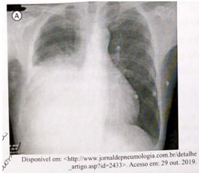
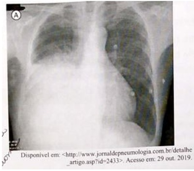
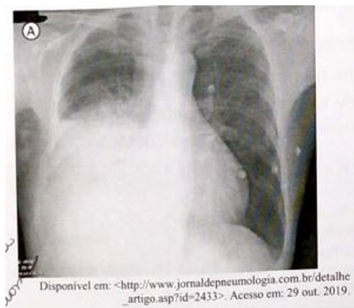
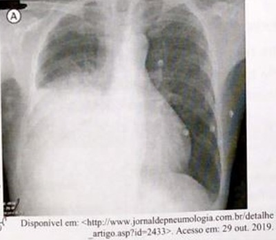

Uma paciente de 58 anos de idade, hipertensa, com história de mau controle, obesidade grau 1, dislipidêmica, tabagista 40 anos/maços, com histórico de participação sem sucesso em programa de abandono ao tabagismo, é atendida em consulta de acolhimento em Unidade de Saúde da Família, após dois anos da última consulta agendada. Alega que procura atendimento em razão da dor de intensidade grau quatro em hemitórax anterior esquerdo há dois dias, contínua, sem irradiações, realizando ""sinal do apontamento"" para demonstrar local exato da dor, sem fator gatilho ou fator de piora notados. Além disso, relata que vem apresentando tosse não produtiva frequente há um mês, sem febre, dispneia, emagrecimento ou demais comemorativos. Não vem fazendo uso das respectivas medicações, alegando que se esquece de administrá-las. Leva boletim de atendimento em consulta realizada há duas semanas em unidade de pronto atendimento em razão da dor lombar, mostrando receita de corticoide intramuscular fornecida na alta, medicação da qual admite fazer uso com certa frequência, a rmando que esta sempre lhe é prescrita quando consulta na UPA. Mostra também exames realizados, há dois meses, solicitados em consulta médica em clínica popular, com os seguintes resultados: Hb = 13,2 g/dL, Ht = 37,1%, leucócitos = 7,2 mil, plaquetas = 148 mil, Cr = 1,1 mg/dL, Ur = 42 mg/dL, colesterol total = 270 mg/dL, HDL = 38 mg/dL, LDL =192 mg/dL, triglicerídeos = 198 mg/dL e glicemia de jejum = 123 mg/dL. Com relação a esse caso clínico e tendo em vista os conhecimentos médicos correlatos, julgue o item a seguir. As múltiplas demandas, na consulta de acolhimento retratada, traduzem uma clara de ciência de longitudinalidade, definida como atributo derivado da Atenção Primária à Saúde.
Uma paciente de 58 anos de idade, hipertensa, com história de mau controle, obesidade grau 1, dislipidêmica, tabagista 40 anos/maços, com histórico de participação sem sucesso em programa de abandono ao tabagismo, é atendida em consulta de acolhimento em Unidade de Saúde da Família, após dois anos da última consulta agendada. Alega que procura atendimento em razão da dor de intensidade grau quatro em hemitórax anterior esquerdo há dois dias, contínua, sem irradiações, realizando ""sinal do apontamento"" para demonstrar local exato da dor, sem fator gatilho ou fator de piora notados. Além disso, relata que vem apresentando tosse não produtiva frequente há um mês, sem febre, dispneia, emagrecimento ou demais comemorativos. Não vem fazendo uso das respectivas medicações, alegando que se esquece de administrá-las. Leva boletim de atendimento em consulta realizada há duas semanas em unidade de pronto atendimento em razão da dor lombar, mostrando receita de corticoide intramuscular fornecida na alta, medicação da qual admite fazer uso com certa frequência, a rmando que esta sempre lhe é prescrita quando consulta na UPA. Mostra também exames realizados, há dois meses, solicitados em consulta médica em clínica popular, com os seguintes resultados: Hb = 13,2 g/dL, Ht = 37,1%, leucócitos = 7,2 mil, plaquetas = 148 mil, Cr = 1,1 mg/dL, Ur = 42 mg/dL, colesterol total = 270 mg/dL, HDL = 38 mg/dL, LDL =192 mg/dL, triglicerídeos = 198 mg/dL e glicemia de jejum = 123 mg/dL. Com relação a esse caso clínico e tendo em vista os conhecimentos médicos correlatos, julgue o item a seguir. Há indicação de pesquisa de BAAR em pelo menos duas amostras de escarro, em razão de a paciente enquadrar-se nos critérios de sintomático respiratório.
Uma paciente de 58 anos de idade, hipertensa, com história de mau controle, obesidade grau 1, dislipidêmica, tabagista 40 anos/maços, com histórico de participação sem sucesso em programa de abandono ao tabagismo, é atendida em consulta de acolhimento em Unidade de Saúde da Família, após dois anos da última consulta agendada. Alega que procura atendimento em razão da dor de intensidade grau quatro em hemitórax anterior esquerdo há dois dias, contínua, sem irradiações, realizando ""sinal do apontamento"" para demonstrar local exato da dor, sem fator gatilho ou fator de piora notados. Além disso, relata que vem apresentando tosse não produtiva frequente há um mês, sem febre, dispneia, emagrecimento ou demais comemorativos. Não vem fazendo uso das respectivas medicações, alegando que se esquece de administrá-las. Leva boletim de atendimento em consulta realizada há duas semanas em unidade de pronto atendimento em razão da dor lombar, mostrando receita de corticoide intramuscular fornecida na alta, medicação da qual admite fazer uso com certa frequência, a rmando que esta sempre lhe é prescrita quando consulta na UPA. Mostra também exames realizados, há dois meses, solicitados em consulta médica em clínica popular, com os seguintes resultados: Hb = 13,2 g/dL, Ht = 37,1%, leucócitos = 7,2 mil, plaquetas = 148 mil, Cr = 1,1 mg/dL, Ur = 42 mg/dL, colesterol total = 270 mg/dL, HDL = 38 mg/dL, LDL =192 mg/dL, triglicerídeos = 198 mg/dL e glicemia de jejum = 123 mg/dL. Com relação a esse caso clínico e tendo em vista os conhecimentos médicos correlatos, julgue o item a seguir. Uma alternativa para a paciente é a oferta de nova tentativa de adesão ao programa de abandono ao tabagismo, já que existem bons resultados nos pacientes com recidiva prévia, quando se opta pela associação de terapia cognitivo comportamental e tratamento farmacológico com adesivo de nicotina e bupropiona, havendo ainda a possibilidade de associação com benzodiazepínicos, caso necessário.
Uma paciente de 58 anos de idade, hipertensa, com história de mau controle, obesidade grau 1, dislipidêmica, tabagista 40 anos/maços, com histórico de participação sem sucesso em programa de abandono ao tabagismo, é atendida em consulta de acolhimento em Unidade de Saúde da Família, após dois anos da última consulta agendada. Alega que procura atendimento em razão da dor de intensidade grau quatro em hemitórax anterior esquerdo há dois dias, contínua, sem irradiações, realizando ""sinal do apontamento"" para demonstrar local exato da dor, sem fator gatilho ou fator de piora notados. Além disso, relata que vem apresentando tosse não produtiva frequente há um mês, sem febre, dispneia, emagrecimento ou demais comemorativos. Não vem fazendo uso das respectivas medicações, alegando que se esquece de administrá-las. Leva boletim de atendimento em consulta realizada há duas semanas em unidade de pronto atendimento em razão da dor lombar, mostrando receita de corticoide intramuscular fornecida na alta, medicação da qual admite fazer uso com certa frequência, a rmando que esta sempre lhe é prescrita quando consulta na UPA. Mostra também exames realizados, há dois meses, solicitados em consulta médica em clínica popular, com os seguintes resultados: Hb = 13,2 g/dL, Ht = 37,1%, leucócitos = 7,2 mil, plaquetas = 148 mil, Cr = 1,1 mg/dL, Ur = 42 mg/dL, colesterol total = 270 mg/dL, HDL = 38 mg/dL, LDL =192 mg/dL, triglicerídeos = 198 mg/dL e glicemia de jejum = 123 mg/dL. Com relação a esse caso clínico e tendo em vista os conhecimentos médicos correlatos, julgue o item a seguir. O uso frequente de corticoides provavelmente não teve influência sobre a síndrome metabólica na paciente.
Uma paciente de 58 anos de idade, hipertensa, com história de mau controle, obesidade grau 1, dislipidêmica, tabagista 40 anos/maços, com histórico de participação sem sucesso em programa de abandono ao tabagismo, é atendida em consulta de acolhimento em Unidade de Saúde da Família, após dois anos da última consulta agendada. Alega que procura atendimento em razão da dor de intensidade grau quatro em hemitórax anterior esquerdo há dois dias, contínua, sem irradiações, realizando ""sinal do apontamento"" para demonstrar local exato da dor, sem fator gatilho ou fator de piora notados. Além disso, relata que vem apresentando tosse não produtiva frequente há um mês, sem febre, dispneia, emagrecimento ou demais comemorativos. Não vem fazendo uso das respectivas medicações, alegando que se esquece de administrá-las. Leva boletim de atendimento em consulta realizada há duas semanas em unidade de pronto atendimento em razão da dor lombar, mostrando receita de corticoide intramuscular fornecida na alta, medicação da qual admite fazer uso com certa frequência, a rmando que esta sempre lhe é prescrita quando consulta na UPA. Mostra também exames realizados, há dois meses, solicitados em consulta médica em clínica popular, com os seguintes resultados: Hb = 13,2 g/dL, Ht = 37,1%, leucócitos = 7,2 mil, plaquetas = 148 mil, Cr = 1,1 mg/dL, Ur = 42 mg/dL, colesterol total = 270 mg/dL, HDL = 38 mg/dL, LDL =192 mg/dL, triglicerídeos = 198 mg/dL e glicemia de jejum = 123 mg/dL. Com relação a esse caso clínico e tendo em vista os conhecimentos médicos correlatos, julgue o item a seguir. As características da dor torácica apresentadas pela paciente resultam em baixo valor preditivo positivo para dor torácica por etiologia cardíaca.
Uma paciente de 58 anos de idade, hipertensa, com história de mau controle, obesidade grau 1, dislipidêmica, tabagista 40 anos/maços, com histórico de participação sem sucesso em programa de abandono ao tabagismo, é atendida em consulta de acolhimento em Unidade de Saúde da Família, após dois anos da última consulta agendada. Alega que procura atendimento em razão da dor de intensidade grau quatro em hemitórax anterior esquerdo há dois dias, contínua, sem irradiações, realizando ""sinal do apontamento"" para demonstrar local exato da dor, sem fator gatilho ou fator de piora notados. Além disso, relata que vem apresentando tosse não produtiva frequente há um mês, sem febre, dispneia, emagrecimento ou demais comemorativos. Não vem fazendo uso das respectivas medicações, alegando que se esquece de administrá-las. Leva boletim de atendimento em consulta realizada há duas semanas em unidade de pronto atendimento em razão da dor lombar, mostrando receita de corticoide intramuscular fornecida na alta, medicação da qual admite fazer uso com certa frequência, a rmando que esta sempre lhe é prescrita quando consulta na UPA. Mostra também exames realizados, há dois meses, solicitados em consulta médica em clínica popular, com os seguintes resultados: Hb = 13,2 g/dL, Ht = 37,1%, leucócitos = 7,2 mil, plaquetas = 148 mil, Cr = 1,1 mg/dL, Ur = 42 mg/dL, colesterol total = 270 mg/dL, HDL = 38 mg/dL, LDL =192 mg/dL, triglicerídeos = 198 mg/dL e glicemia de jejum = 123 mg/dL. Com relação a esse caso clínico e tendo em vista os conhecimentos médicos correlatos, julgue o item a seguir. Há indicação formal de início do uso de estatina, independentemente de a paciente apresentar interesse recente por atividades físicas e desejo de adesão a medidas alimentares.
Um paciente de 28 anos de idade chega à emergência do pronto-socorro levado por ambulância após acidente automobilístico a caminho do trabalho em metrópole brasileira, com atendimento pré-hospitalar pela equipe da SAMU, iniciado oito minutos após o chamado. Na chegada à emergência, encontra-se em maca rígida, com colar cervical, com cha de atendimento pré-hospitalar indicando pressão arterial = 96 mmHg x 64 mmHg, frequência cardíaca = 102 bpm, frequência respiratória = 20 ipm, saturação de oxigênio = 94%, regular estado geral, mucosas úmidas e hipocoradas, escala de coma de Glasgow 12, pupilas isocóricas e fotorreagentes, ausculta pulmonar e cardíaca sem particularidades, abdome globoso, sem sinais de peritonismo, tempo de enchimento capilar de dois segundos, impressão de nítida fratura de membro inferior esquerdo e membro superior direito. Com base nesse caso clínico e nos conhecimentos médicos correlatos, julgue o item a seguir. O risco de insu ciência respiratória aguda para esse paciente estará aumentado nos dias subsequentes ao acidente, sobretudo em razão dos efeitos orgânicos secundários do politrauma.
Um paciente de 28 anos de idade chega à emergência do pronto-socorro levado por ambulância após acidente automobilístico a caminho do trabalho em metrópole brasileira, com atendimento pré-hospitalar pela equipe da SAMU, iniciado oito minutos após o chamado. Na chegada à emergência, encontra-se em maca rígida, com colar cervical, com cha de atendimento pré-hospitalar indicando pressão arterial = 96 mmHg x 64 mmHg, frequência cardíaca = 102 bpm, frequência respiratória = 20 ipm, saturação de oxigênio = 94%, regular estado geral, mucosas úmidas e hipocoradas, escala de coma de Glasgow 12, pupilas isocóricas e fotorreagentes, ausculta pulmonar e cardíaca sem particularidades, abdome globoso, sem sinais de peritonismo, tempo de enchimento capilar de dois segundos, impressão de nítida fratura de membro inferior esquerdo e membro superior direito. Com base nesse caso clínico e nos conhecimentos médicos correlatos, julgue o item a seguir. Por ser considerado acidente de trabalho grave, esse caso deve ser noti cado ao Sistema Nacional de Atendimento Médico (SINAM) em caráter compulsório semanal.
Revisar: possível letra faltando em enunciado
Um paciente de 28 anos de idade chega à emergência do pronto-socorro levado por ambulância após acidente automobilístico a caminho do trabalho em metrópole brasileira, com atendimento pré-hospitalar pela equipe da SAMU, iniciado oito minutos após o chamado. Na chegada à emergência, encontra-se em maca rígida, com colar cervical, com cha de atendimento pré-hospitalar indicando pressão arterial = 96 mmHg x 64 mmHg, frequência cardíaca = 102 bpm, frequência respiratória = 20 ipm, saturação de oxigênio = 94%, regular estado geral, mucosas úmidas e hipocoradas, escala de coma de Glasgow 12, pupilas isocóricas e fotorreagentes, ausculta pulmonar e cardíaca sem particularidades, abdome globoso, sem sinais de peritonismo, tempo de enchimento capilar de dois segundos, impressão de nítida fratura de membro inferior esquerdo e membro superior direito. Com base nesse caso clínico e nos conhecimentos médicos correlatos, julgue o item a seguir. Os acidentes, como o descrito, correspondem à segunda maior causa de morte por causas externas no Brasil.
Um paciente de 28 anos de idade chega à emergência do pronto-socorro levado por ambulância após acidente automobilístico a caminho do trabalho em metrópole brasileira, com atendimento pré-hospitalar pela equipe da SAMU, iniciado oito minutos após o chamado. Na chegada à emergência, encontra-se em maca rígida, com colar cervical, com cha de atendimento pré-hospitalar indicando pressão arterial = 96 mmHg x 64 mmHg, frequência cardíaca = 102 bpm, frequência respiratória = 20 ipm, saturação de oxigênio = 94%, regular estado geral, mucosas úmidas e hipocoradas, escala de coma de Glasgow 12, pupilas isocóricas e fotorreagentes, ausculta pulmonar e cardíaca sem particularidades, abdome globoso, sem sinais de peritonismo, tempo de enchimento capilar de dois segundos, impressão de nítida fratura de membro inferior esquerdo e membro superior direito. Com base nesse caso clínico e nos conhecimentos médicos correlatos, julgue o item a seguir. O tempo resposta da ambulância nesse caso retrata um adequado funcionamento da prevenção terciária.
Acerca dos conhecimentos de bioestatística, das políticas de saúde e dos conhecimentos médicos correlatos, julgue o item a seguir. Programas de mutirão não são custo-efetivos e não causam impacto na morbimortalidade de uma população em longo prazo.
Acerca dos conhecimentos de bioestatística, das políticas de saúde e dos conhecimentos médicos correlatos, julgue o item a seguir. As políticas de rastreamento devem priorizar testes com maior sensibilidade, a fim de haver baixa taxa de falsonegativos.
Acerca dos conhecimentos de bioestatística, das políticas de saúde e dos conhecimentos médicos correlatos, julgue o item a seguir. A e cácia de um estudo traduz o poder que esse tem de reproduzir, para distintas populações e circunstâncias, desfechos semelhantes aos encontrados na pesquisa clínica.
Acerca dos conhecimentos de bioestatística, das políticas de saúde e dos conhecimentos médicos correlatos, julgue o item a seguir. O erro tipo 1, em um teste de hipóteses, consiste na rejeição da hipótese nula, quando ela é verdadeira.
Acerca dos conhecimentos de bioestatística, das políticas de saúde e dos conhecimentos médicos correlatos, julgue o item a seguir. Estudos de coorte prospectivos favorecem o estudo de doenças raras.
Uma paciente de 12 anos de idade vai a consulta agendada em Unidade de Saúde da Família acompanhada pela mãe. A familiar demonstra preocupações quanto ao desenvolvimento da lha, alegando ser esta uma das mais baixas entre as respectivas colegas e que ainda não teve a primeira menstruação, a despeito de estar notando desenvolvimento das mamas há 10 meses, observando-se a presença de broto mamário ao exame físico. Refere-se, também, que a mãe está receosa de a lha vir a ser diagnosticada com síndrome dos ovários policísticos (SOP), tendo base tal preocupação em leitura de informações da internet em correlação com o fato de a lha apresentar acne facial, de ainda nunca ter menstruado e de possuir histórico familiar de primeiro grau de obesidade e diabetes mellitus tipo 2. Faz uso de metilfenidato 10 mg/dia por diagnóstico prévio de transtorno de de cit de atenção e hiperatividade, demonstrando manter atenção apenas para atividades do próprio interesse, sem, no entanto, apresentar histórico de baixo desempenho escolar ou prejuízo da vida social. Em avaliação ponderoestatural, verifica-se IMC de 21 kg/m², considerado adequado para a idade da paciente. Com base nesse caso clínico e nos conhecimentos médicos correlatos, julgue o item a seguir. O diagnóstico de transtorno de de cit de atenção e hiperatividade é clínico, levando-se em conta a exigência de que deve haver clara evidência de que os sintomas interferem na qualidade do funcionamento social, acadêmico ou ocupacional ou reduzem-na, tornando questionável o diagnóstico prévio da paciente do caso clínico.
Uma paciente de 12 anos de idade vai a consulta agendada em Unidade de Saúde da Família acompanhada pela mãe. A familiar demonstra preocupações quanto ao desenvolvimento da lha, alegando ser esta uma das mais baixas entre as respectivas colegas e que ainda não teve a primeira menstruação, a despeito de estar notando desenvolvimento das mamas há 10 meses, observando-se a presença de broto mamário ao exame físico. Refere-se, também, que a mãe está receosa de a lha vir a ser diagnosticada com síndrome dos ovários policísticos (SOP), tendo base tal preocupação em leitura de informações da internet em correlação com o fato de a lha apresentar acne facial, de ainda nunca ter menstruado e de possuir histórico familiar de primeiro grau de obesidade e diabetes mellitus tipo 2. Faz uso de metilfenidato 10 mg/dia por diagnóstico prévio de transtorno de de cit de atenção e hiperatividade, demonstrando manter atenção apenas para atividades do próprio interesse, sem, no entanto, apresentar histórico de baixo desempenho escolar ou prejuízo da vida social. Em avaliação ponderoestatural, verifica-se IMC de 21 kg/m², considerado adequado para a idade da paciente. Com base nesse caso clínico e nos conhecimentos médicos correlatos, julgue o item a seguir. Deve-se atentar para o histórico familiar de diabetes mellitus tipo 2 da paciente, pois a gênese da síndrome dos ovários policísticos está relacionada à resistência a insulina, tornando necessário o início precoce de rastreamento para diabetes mellitus com solicitação de glicemia de jejum para a paciente nessa consulta, a despeito da clínica da paciente.
Uma paciente de 12 anos de idade vai a consulta agendada em Unidade de Saúde da Família acompanhada pela mãe. A familiar demonstra preocupações quanto ao desenvolvimento da lha, alegando ser esta uma das mais baixas entre as respectivas colegas e que ainda não teve a primeira menstruação, a despeito de estar notando desenvolvimento das mamas há 10 meses, observando-se a presença de broto mamário ao exame físico. Refere-se, também, que a mãe está receosa de a lha vir a ser diagnosticada com síndrome dos ovários policísticos (SOP), tendo base tal preocupação em leitura de informações da internet em correlação com o fato de a lha apresentar acne facial, de ainda nunca ter menstruado e de possuir histórico familiar de primeiro grau de obesidade e diabetes mellitus tipo 2. Faz uso de metilfenidato 10 mg/dia por diagnóstico prévio de transtorno de de cit de atenção e hiperatividade, demonstrando manter atenção apenas para atividades do próprio interesse, sem, no entanto, apresentar histórico de baixo desempenho escolar ou prejuízo da vida social. Em avaliação ponderoestatural, verifica-se IMC de 21 kg/m², considerado adequado para a idade da paciente. Com base nesse caso clínico e nos conhecimentos médicos correlatos, julgue o item a seguir. A acne citada pela mãe da paciente na consulta é um achado dermatológico pouco específico para SOP, embora aumente a probabilidade pré-teste para hiperandrogenismo, componente da fisiopatologia de SOP.
Uma paciente de 12 anos de idade vai a consulta agendada em Unidade de Saúde da Família acompanhada pela mãe. A familiar demonstra preocupações quanto ao desenvolvimento da lha, alegando ser esta uma das mais baixas entre as respectivas colegas e que ainda não teve a primeira menstruação, a despeito de estar notando desenvolvimento das mamas há 10 meses, observando-se a presença de broto mamário ao exame físico. Refere-se, também, que a mãe está receosa de a lha vir a ser diagnosticada com síndrome dos ovários policísticos (SOP), tendo base tal preocupação em leitura de informações da internet em correlação com o fato de a lha apresentar acne facial, de ainda nunca ter menstruado e de possuir histórico familiar de primeiro grau de obesidade e diabetes mellitus tipo 2. Faz uso de metilfenidato 10 mg/dia por diagnóstico prévio de transtorno de de cit de atenção e hiperatividade, demonstrando manter atenção apenas para atividades do próprio interesse, sem, no entanto, apresentar histórico de baixo desempenho escolar ou prejuízo da vida social. Em avaliação ponderoestatural, verifica-se IMC de 21 kg/m², considerado adequado para a idade da paciente. Com base nesse caso clínico e nos conhecimentos médicos correlatos, julgue o item a seguir. A paciente possui indicação para prevenção primária para infecção por HPV mediante vacinação.
Uma paciente de 12 anos de idade vai a consulta agendada em Unidade de Saúde da Família acompanhada pela mãe. A familiar demonstra preocupações quanto ao desenvolvimento da lha, alegando ser esta uma das mais baixas entre as respectivas colegas e que ainda não teve a primeira menstruação, a despeito de estar notando desenvolvimento das mamas há 10 meses, observando-se a presença de broto mamário ao exame físico. Refere-se, também, que a mãe está receosa de a lha vir a ser diagnosticada com síndrome dos ovários policísticos (SOP), tendo base tal preocupação em leitura de informações da internet em correlação com o fato de a lha apresentar acne facial, de ainda nunca ter menstruado e de possuir histórico familiar de primeiro grau de obesidade e diabetes mellitus tipo 2. Faz uso de metilfenidato 10 mg/dia por diagnóstico prévio de transtorno de de cit de atenção e hiperatividade, demonstrando manter atenção apenas para atividades do próprio interesse, sem, no entanto, apresentar histórico de baixo desempenho escolar ou prejuízo da vida social. Em avaliação ponderoestatural, verifica-se IMC de 21 kg/m², considerado adequado para a idade da paciente. Com base nesse caso clínico e nos conhecimentos médicos correlatos, julgue o item a seguir. Conforme a normalidade de crescimento e desenvolvimento previsto para o sexo feminino, é esperado que a paciente apresente pico da velocidade de crescimento em período de aproximadamente um ano após o aparecimento do broto mamário, período em que também se espera a menarca.
Um paciente de 64 anos de idade, acamado, é recebido, junto a dois familiares, em seu domicílio por equipe de Estratégia de Saúde da Família. Os familiares demonstram possuir diversas dúvidas quanto ao prognóstico da doença apresentada pelo paciente, diagnosticado com linfoma de Hodgkin há três meses, com metástases extranodais de acordo com investigação da equipe de oncologia assistente, a qual instituiu manejo de conforto para cuidados paliativos na última internação hospitalar há duas semanas, com prescrição de mor na para uso domiciliar. Um dos familiares acompanhantes a rma que está gravando o áudio do atendimento atual sem aviso prévio e alega que gostaria de pausá-lo, para mostrar a gravação realizada na referida internação hospitalar, com as orientações fornecidas pela equipe de oncologia assistente, questionando se a conduta dos pro ssionais não se trata de erro médico. Na gravação, escutam-se as explicações compatíveis com planos de início de medidas que focassem no bem-estar do paciente, garantindo um nal de vida digno e com menor sofrimento, haja vista presença de estágio de terminalidade. Com base nesse caso clínico e nos conhecimentos médicos correlatos, julgue o item a seguir. O erro médico em cuidados ao paciente terminal pode ser alcançado pelas três possibilidades de suscitar o dano, que são caracterizadas no código de ética médica como imperícia, imprudência e negligência, não havendo, portanto, erro médico em qualquer parte do caso exposto.
Um paciente de 64 anos de idade, acamado, é recebido, junto a dois familiares, em seu domicílio por equipe de Estratégia de Saúde da Família. Os familiares demonstram possuir diversas dúvidas quanto ao prognóstico da doença apresentada pelo paciente, diagnosticado com linfoma de Hodgkin há três meses, com metástases extranodais de acordo com investigação da equipe de oncologia assistente, a qual instituiu manejo de conforto para cuidados paliativos na última internação hospitalar há duas semanas, com prescrição de mor na para uso domiciliar. Um dos familiares acompanhantes a rma que está gravando o áudio do atendimento atual sem aviso prévio e alega que gostaria de pausá-lo, para mostrar a gravação realizada na referida internação hospitalar, com as orientações fornecidas pela equipe de oncologia assistente, questionando se a conduta dos pro ssionais não se trata de erro médico. Na gravação, escutam-se as explicações compatíveis com planos de início de medidas que focassem no bem-estar do paciente, garantindo um nal de vida digno e com menor sofrimento, haja vista presença de estágio de terminalidade. Com base nesse caso clínico e nos conhecimentos médicos correlatos, julgue o item a seguir. Frente ao anúncio de o familiar a rmar que está gravando a consulta, torna-se necessário ressaltar que poderá ser realizada gravação das consultas médicas apenas com a autorização expressa do pro ssional, sem que este, no entanto, possa recusar-se a atender o paciente, caracterizando o ato como ilícito ético por omissão de cuidados à saúde.
Um paciente de 64 anos de idade, acamado, é recebido, junto a dois familiares, em seu domicílio por equipe de Estratégia de Saúde da Família. Os familiares demonstram possuir diversas dúvidas quanto ao prognóstico da doença apresentada pelo paciente, diagnosticado com linfoma de Hodgkin há três meses, com metástases extranodais de acordo com investigação da equipe de oncologia assistente, a qual instituiu manejo de conforto para cuidados paliativos na última internação hospitalar há duas semanas, com prescrição de mor na para uso domiciliar. Um dos familiares acompanhantes a rma que está gravando o áudio do atendimento atual sem aviso prévio e alega que gostaria de pausá-lo, para mostrar a gravação realizada na referida internação hospitalar, com as orientações fornecidas pela equipe de oncologia assistente, questionando se a conduta dos pro ssionais não se trata de erro médico. Na gravação, escutam-se as explicações compatíveis com planos de início de medidas que focassem no bem-estar do paciente, garantindo um nal de vida digno e com menor sofrimento, haja vista presença de estágio de terminalidade. Com base nesse caso clínico e nos conhecimentos médicos correlatos, julgue o item a seguir. A doença de base do paciente (linfoma de Hodgkin) possui prevalência maior na população com infecção por HIV do que a média populacional geral.
Um paciente de 64 anos de idade, acamado, é recebido, junto a dois familiares, em seu domicílio por equipe de Estratégia de Saúde da Família. Os familiares demonstram possuir diversas dúvidas quanto ao prognóstico da doença apresentada pelo paciente, diagnosticado com linfoma de Hodgkin há três meses, com metástases extranodais de acordo com investigação da equipe de oncologia assistente, a qual instituiu manejo de conforto para cuidados paliativos na última internação hospitalar há duas semanas, com prescrição de mor na para uso domiciliar. Um dos familiares acompanhantes a rma que está gravando o áudio do atendimento atual sem aviso prévio e alega que gostaria de pausá-lo, para mostrar a gravação realizada na referida internação hospitalar, com as orientações fornecidas pela equipe de oncologia assistente, questionando se a conduta dos pro ssionais não se trata de erro médico. Na gravação, escutam-se as explicações compatíveis com planos de início de medidas que focassem no bem-estar do paciente, garantindo um nal de vida digno e com menor sofrimento, haja vista presença de estágio de terminalidade. Com base nesse caso clínico e nos conhecimentos médicos correlatos, julgue o item a seguir. A ortotanásia, estratégia regulamentada por resolução do CFM, é uma conduta que visa à não malevolência, beneficiando o conforto de pacientes oncológicos em cuidados paliativos em estágio de terminalidade, como o do paciente em questão.
Uma gestante com 35 semanas de idade gestacional dá entrada no pronto atendimento obstétrico com queixa de cefaleia intensa e ""visão embaçada"". Notou ainda que vem urinando pouco ao longo dos últimos dois dias. Ao exame, não há dinâmica uterina, BCF = 90 bpm, e o colo é grosso, pérvio para uma polpa digital ao toque vaginal. Apresenta PA = 160 mmHg x 110 mmHg em duas aferições, frequência cardíaca = 102 bpm, frequência respiratória = 20 ipm e SatO₂ = 97% em ar ambiente. Amostra isolada de urina com 3+ de proteinúria. Considerando esse caso clínico e os conhecimentos médicos correlatos, julgue o item a seguir. Caso os exames complementares evidenciassem esquizócitos, LDH > 600 UI/L, AST > 70 UI/L e plaquetas < 160.000/mm³, estaria confirmada a síndrome de HELLP.
Uma gestante com 35 semanas de idade gestacional dá entrada no pronto atendimento obstétrico com queixa de cefaleia intensa e ""visão embaçada"". Notou ainda que vem urinando pouco ao longo dos últimos dois dias. Ao exame, não há dinâmica uterina, BCF = 90 bpm, e o colo é grosso, pérvio para uma polpa digital ao toque vaginal. Apresenta PA = 160 mmHg x 110 mmHg em duas aferições, frequência cardíaca = 102 bpm, frequência respiratória = 20 ipm e SatO₂ = 97% em ar ambiente. Amostra isolada de urina com 3+ de proteinúria. Considerando esse caso clínico e os conhecimentos médicos correlatos, julgue o item a seguir. O manejo inicial da paciente deve incluir, obrigatoriamente, um anti-hipertensivo como hidralazina e sulfato de magnésio, atentando para sinais de intoxicação por esse último.
Uma gestante com 35 semanas de idade gestacional dá entrada no pronto atendimento obstétrico com queixa de cefaleia intensa e "visão embaçada". Notou ainda que vem urinando pouco ao longo dos últimos dois dias. Ao exame, não há dinâmica uterina, BCF = 90 bpm, e o colo é grosso, pérvio para uma polpa digital ao toque vaginal. Apresenta PA = 160 mmHg x 110 mmHg em duas aferições, frequência cardíaca = 102 bpm, frequência respiratória = 20 ipm e SatO₂ = 97% em ar ambiente. Amostra isolada de urina com 3+ de proteinúria. Considerando esse caso clínico e os conhecimentos médicos correlatos, julgue o item a seguir. O caso deve ser classificado como pré-eclâmpsia grave, devendo-se iniciar indução do parto vaginal com misoprostol e avaliação rigorosa de bem-estar fetal.
Uma gestante de 26 anos de idade, IG de nove semanas, G2P1A0, retorna à UBS para consulta de pré-natal. Apresenta queixa de azia, constipação e desconforto esporádico em quadrante superior direito do abdome. Ao exame físico, apresenta bom estado geral, abdome indolor, útero impalpável e BCF inaudíveis, Frequência cardíaca = 90 bpm, frequência respiratória = 17 ipm, SatO₂ = 98% em ar ambiente. Leva calendário vacinal com esquema completo para hepatite B e três doses da dupla adulto (dT), realizadas na última gestação, há três anos. Entre os exames complementares, destacam-se os seguintes resultados: EQU sem particularidades; e urocultura - crescimento de Streptococcus do grupo B > 100.000 UFC/mL. A cerca desse caso clínico e com base nos conhecimentos médicos correlatos, julgue o item a seguir. Deve-se atentar ao surgimento de sinais e sintomas sugestivos de colelitíase, uma vez que a gestação aumenta a incidência de cálculos biliares.
Uma gestante de 26 anos de idade, IG de nove semanas, G2P1A0, retorna à UBS para consulta de pré-natal. Apresenta queixa de azia, constipação e desconforto esporádico em quadrante superior direito do abdome. Ao exame físico, apresenta bom estado geral, abdome indolor, útero impalpável e BCF inaudíveis, Frequência cardíaca = 90 bpm, frequência respiratória = 17 ipm, SatO₂ = 98% em ar ambiente. Leva calendário vacinal com esquema completo para hepatite B e três doses da dupla adulto (dT), realizadas na última gestação, há três anos. Entre os exames complementares, destacam-se os seguintes resultados: EQU sem particularidades; e urocultura - crescimento de Streptococcus do grupo B > 100.000 UFC/mL. Acerca desse caso clínico e com base nos conhecimentos médicos correlatos, julgue o item a seguir. Acredita-se que a lenti cação do trânsito intestinal e do esvaziamento gástrico, que podem levar a sintomas como os descritos pela paciente, esteja, relacionados aos descritos pela paciente, estejam relacionados aos níveis de progesterona no período gestacional.
Uma gestante de 26 anos de idade, IG de nove semanas, G2P1A0, retorna à UBS para consulta de pré-natal. Apresenta queixa de azia, constipação e desconforto esporádico em quadrante superior direito do abdome. Ao exame físico, apresenta bom estado geral, abdome indolor, útero impalpável e BCF inaudíveis, Frequência cardíaca = 90 bpm, frequência respiratória = 17 ipm, SatO₂ = 98% em ar ambiente. Leva calendário vacinal com esquema completo para hepatite B e três doses da dupla adulto (dT), realizadas na última gestação, há três anos. Entre os exames complementares, destacam-se os seguintes resultados: EQU sem particularidades; e urocultura - crescimento de Streptococcus do grupo B > 100.000 UFC/mL. Acerca desse caso clínico e com base nos conhecimentos médicos correlatos, julgue o item a seguir. Apesar de haver esquema vacinal com três doses da vacina dupla adulto (dT), a gestante deverá receber uma dose da tríplice bacteriana (dTpa) após a vigésima semana da atual gestação.
Uma gestante de 26 anos de idade, IG de nove semanas, G2P1A0, retorna à UBS para consulta de pré-natal. Apresenta queixa de azia, constipação e desconforto esporádico em quadrante superior direito do abdome. Ao exame físico, apresenta bom estado geral, abdome indolor, útero impalpável e BCF inaudíveis, Frequência cardíaca = 90 bpm, frequência respiratória = 17 ipm, SatO₂ = 98% em ar ambiente. Leva calendário vacinal com esquema completo para hepatite B e três doses da dupla adulto (dT), realizadas na última gestação, há três anos. Entre os exames complementares, destacam-se os seguintes resultados: EQU sem particularidades; e urocultura - crescimento de Streptococcus do grupo B > 100.000 UFC/mL. Acerca desse caso clínico e com base nos conhecimentos médicos correlatos, julgue o item a seguir. A paciente deverá realizar a pro laxia para infecção neonatal por Streptococcus do grupo B, durante trabalho de parto, mesmo se apresentar swab vaginal e anal negativos entre 35 e 37 semanas.
Uma gestante de 26 anos de idade, IG de nove semanas, G2P1A0, retorna à UBS para consulta de pré-natal. Apresenta queixa de azia, constipação e desconforto esporádico em quadrante superior direito do abdome. Ao exame físico, apresenta bom estado geral, abdome indolor, útero impalpável e BCF inaudíveis, Frequência cardíaca = 90 bpm, frequência respiratória = 17 ipm, SatO₂ = 98% em ar ambiente. Leva calendário vacinal com esquema completo para hepatite B e três doses da dupla adulto (dT), realizadas na última gestação, há três anos. Entre os exames complementares, destacam-se os seguintes resultados: EQU sem particularidades; e urocultura - crescimento de Streptococcus do grupo B > 100.000 UFC/mL. Acerca desse caso clínico e com base nos conhecimentos médicos correlatos, julgue o item a seguir. Como a paciente não apresenta sintomas de infecção do trato urinário, não há necessidade de tratamento da bacteriúria assintomática. Caso houvesse sintomas, a fosfomicina, em dose única, seria uma boa opção de tratamento.
A respeito do trauma na gestação, julgue o item a seguir. As prioridades do atendimento inicial à gestante devem ser semelhantes às prioridades da mulher não grávida. A adoção de medidas de reanimação materna, assim como a adequada monitorização maternofetal, con guram, também, o melhor tratamento inicial para o feto
Considerando os estudos acerca da síndrome antifosfolipídio (SAF), julgue o item a seguir. É uma causa de abortamento habitual e pode apresentar anticorpo lúpus anticoagulante circulante.
Uma paciente vítima de estupro deseja realizar a interrupção da gravidez. A respeito desse caso clinico, julgue o item a seguir. O médico apenas deverá realizar o procedimento quando a paciente apresentar documentação necessária, a saber, termo de consentimento livre e esclarecido, boletim de ocorrência policial e exame de corpo de delito.
Considere um paciente de 88 anos de idade, hipertensa, diabética tipo 2, em uso de insulina e com quadro de insu ciência cardíaca NYHA classe III. Ela foi diagnosticada com câncer de colo uterino estágio IIIB pela classificação da FIGO (2009). Na última ecografia de aparelho urinário, foi visualizada hidronefrose moderada à direita. Com base nesse caso clínico e nos conhecimentos médicos correlatos, julgue o item a seguir. Considerando o status funcional da paciente, as comorbidades envolvidas e o tratamento proposto para a neoplastia em questão, deve-se introduzir a ideia de cuidados paliativos com familiares e paciente, visando, entre outros, ao bem-estar, apesar da evolução da doença, e ao manejo álgico adequado.
Considere um paciente de 88 anos de idade, hipertensa, diabética tipo 2, em uso de insulina e com quadro de insu ciência cardíaca NYHA classe III. Ela foi diagnosticada com câncer de colo uterino estágio IIIB pela classificação da FIGO (2009). Na última ecografia de aparelho urinário, foi visualizada hidronefrose moderada à direita. Com base nesse caso clínico e nos conhecimentos médicos correlatos, julgue o item a seguir. Os achados de hidronefrose ou rim não funcionante devem ser incluídos no estadiamento no câncer de colo uterino, quando excluídas outras causas.
Considere um paciente de 88 anos de idade, hipertensa, diabética tipo 2, em uso de insulina e com quadro de insu ciência cardíaca NYHA classe III. Ela foi diagnosticada com câncer de colo uterino estágio IIIB pela classificação da FIGO (2009). Na última ecografia de aparelho urinário, foi visualizada hidronefrose moderada à direita. Com base nesse caso clínico e nos conhecimentos médicos correlatos, julgue o item a seguir. A paciente pode ser tratada com quimiorradioterapia primária.
No que se refere às hemorragias durante a gestação e considerando os conhecimentos médicos correlatos, julgue o item a seguir. Sangramento vivo e indolor que ocorre após amniotomia, associado a sofrimento fetal grave e precoce, corresponde à rotura de vasa prévia, quadro grave de sangramento de origem fetal.
No que se refere às hemorragias durante a gestação e considerando os conhecimentos médicos correlatos, julgue o item a seguir. Sangramento na primeira metade da gestação, intermitente e em aspecto de "suco de ameixa", com útero aumentado de volume e incompatível com idade gestacional, pode estar relacionado à doença trofoblástica gestacional, que deve ser acompanhada, inclusive, após esvaziamento uterino pelo risco de doença maligna.
Uma paciente de 23 anos de idade refere que vem manifestando ciclos menstruais muito irregulares há três anos, com ausência total de menstruação nos últimos seis meses. Está bastante incomodada, pois vem apresentando aumento de peso e muitas espinhas e notou, também, presença de pelos em áreas não usuais para mulheres. Quanto a esse caso clínico e com base nos conhecimentos médicos correlatos, julgue o item a seguir. Entre as medicações usadas no tratamento da anovulação crônica hiperandrogênica, é correto citar os contraceptivos orais combinados, o citrato de clomifeno para indução da ovulação e a metformina, que deve ser usada em todas as pacientes pelo alto risco de evolução para diabetes mellitus.
Uma paciente de 23 anos de idade refere que vem manifestando ciclos menstruais muito irregulares há três anos, com ausência total de menstruação nos últimos seis meses. Está bastante incomodada, pois vem apresentando aumento de peso e muitas espinhas e notou, também, presença de pelos em áreas não usuais para mulheres. Quanto a esse caso clínico e com base nos conhecimentos médicos correlatos, julgue o item a seguir. Caso a paciente apresente índice de Ferriman igual a 9, deverá ser solicitada ecogra a pélvica transvaginal, para confirmar a presença de ovários policísticos à USG, achado imprescindível para confirmação diagnóstica.
Uma paciente de 23 anos de idade refere que vem manifestando ciclos menstruais muito irregulares há três anos, com ausência total de menstruação nos últimos seis meses. Está bastante incomodada, pois vem apresentando aumento de peso e muitas espinhas e notou, também, presença de pelos em áreas não usuais para mulheres. Quanto a esse caso clínico e com base nos conhecimentos médicos correlatos, julgue o item a seguir. A paciente apresenta amenorreia secundária com quadro clínico sugestivo de síndrome dos ovários policísticos. A investigação inicial da amenorreia deve ser feita com dosagem de beta-hCG, prolactina e TSH.
Uma paciente de 50 anos de idade vai a consulta em UBS com queixa de corrimento vaginal acinzentado e com odor fétido na última semana. Refere também que gostaria de realizar check-up, pois não se consulta com médico há mais de 10 anos e está preocupada, pois a própria mãe foi diagnosticada com câncer de mama quando tinha 68 anos de idade. História médica pregressa: G6P6A0, diagnóstico prévio de sí lis tratada recentemente e coitarca aos 14 anos de idade. Tabagista de um maço de cigarro ao dia desde os 15 anos de idade. Considerando esse caso clínico e os conhecimentos médicos relacionados à saúde da mulher, julgue o item a seguir. Pacientes multíparas, como a descrita no caso clínico, apresentam risco menor de desenvolverem câncer de mama, quando comparadas às nulíparas. Entretanto, ainda não há consenso quanto à relação entre câncer de mama e tabagismo.
Uma paciente de 50 anos de idade vai a consulta em UBS com queixa de corrimento vaginal acinzentado e com odor fétido na última semana. Refere também que gostaria de realizar check-up, pois não se consulta com médico há mais de 10 anos e está preocupada, pois a própria mãe foi diagnosticada com câncer de mama quando tinha 68 anos de idade. História médica pregressa: G6P6A0, diagnóstico prévio de sí lis tratada recentemente e coitarca aos 14 anos de idade. Tabagista de um maço de cigarro ao dia desde os 15 anos de idade. Considerando esse caso clínico e os conhecimentos médicos relacionados à saúde da mulher, julgue o item a seguir. O fato de ter apresentado quadro de sí lis anteriormente não eleva o risco de a paciente vir a desenvolver câncer de colo uterino.
Uma paciente de 50 anos de idade vai a consulta em UBS com queixa de corrimento vaginal acinzentado e com odor fétido na última semana. Refere também que gostaria de realizar check-up, pois não se consulta com médico há mais de 10 anos e está preocupada, pois a própria mãe foi diagnosticada com câncer de mama quando tinha 68 anos de idade. História médica pregressa: G6P6A0, diagnóstico prévio de sí lis tratada recentemente e coitarca aos 14 anos de idade. Tabagista de um maço de cigarro ao dia desde os 15 anos de idade. Considerando esse caso clínico e os conhecimentos médicos relacionados à saúde da mulher, julgue o item a seguir. Deverá ser solicitado o exame colpocitológico para rastreamento de neoplasia de colo uterino, cujo principal fator de risco são as infecções do HPV, particularmente os subtipos 16 e 18.
Rastreamento nas pacientes de alto risco Uma paciente de 50 anos de idade vai a consulta em UBS com queixa de corrimento vaginal acinzentado e com odor fétido na última semana. Refere também que gostaria de realizar check-up, pois não se consulta com médico há mais de 10 anos e está preocupada, pois a própria mãe foi diagnosticada com câncer de mama quando tinha 68 anos de idade. História médica pregressa: G6P6A0, diagnóstico prévio de sí lis tratada recentemente e coitarca aos 14 anos de idade. Tabagista de um maço de cigarro ao dia desde os 15 anos de idade. Considerando esse caso clínico e os conhecimentos médicos relacionados à saúde da mulher, julgue o item a seguir. Deverá ser solicitada mamogra a de rastreamento para a paciente. A história descrita de câncer na mãe, aos 68 anos de idade, não indicaria o rastreamento da paciente em idade mais precoce que a população de baixo risco.
Uma paciente de 50 anos de idade vai a consulta em UBS com queixa de corrimento vaginal acinzentado e com odor fétido na última semana. Refere também que gostaria de realizar check-up, pois não se consulta com médico há mais de 10 anos e está preocupada, pois a própria mãe foi diagnosticada com câncer de mama quando tinha 68 anos de idade. História médica pregressa: G6P6A0, diagnóstico prévio de sí lis tratada recentemente e coitarca aos 14 anos de idade. Tabagista de um maço de cigarro ao dia desde os 15 anos de idade. Considerando esse caso clínico e os conhecimentos médicos relacionados à saúde da mulher, julgue o item a seguir. Considerando diagnóstico de vaginose bacteriana por Gardnerella vaginalis, o tratamento poderá ser feito com metronidazol via oral, devendo-se, ainda, convocar parceria sexual para tratamento adequado do casal.
Uma criança de três meses de idade, avaliada em consulta de puericultura, é classificada, pelas curvas de crescimento da Organização Mundial de Saúde, como portadora de muito baixo peso e com perímetro cefálico abaixo do esperado para a idade. É internada para investigação do quadro, sendo solicitada tomogra a de crânio que demonstrou calci cações intracranianas periventriculares. Acerca desse caso clínico e considerando os conhecimentos médicos correlatados, julgue o item a seguir. Trombocitopenia é um achado possível nesse caso.
Uma criança de três meses de idade, avaliada em consulta de puericultura, é classificada, pelas curvas de crescimento da Organização Mundial de Saúde, como portadora de muito baixo peso e com perímetro cefálico abaixo do esperado para a idade. É internada para investigação do quadro, sendo solicitada tomogra a de crânio que demonstrou calci cações intracranianas periventriculares. Acerca desse caso clínico e considerando os conhecimentos médicos correlatados, julgue o item a seguir. A imunoglobulina hiperimune para essa doença pode ser administrada até, no máximo, cinco dias após o contato de comunicantes suscetíveis.
Uma criança de três meses de idade, avaliada em consulta de puericultura, é classificada, pelas curvas de crescimento da Organização Mundial de Saúde, como portadora de muito baixo peso e com perímetro cefálico abaixo do esperado para a idade. É internada para investigação do quadro, sendo solicitada tomogra a de crânio que demonstrou calci cações intracranianas periventriculares. Acerca desse caso clínico e considerando os conhecimentos médicos correlatados, julgue o item a seguir. O rastreio dessa infecção durante a gestação é preconizado pelas diretrizes do Ministério da Saúde.
Uma criança de três meses de idade, avaliada em consulta de puericultura, é classificada, pelas curvas de crescimento da Organização Mundial de Saúde, como portadora de muito baixo peso e com perímetro cefálico abaixo do esperado para a idade. É internada para investigação do quadro, sendo solicitada tomogra a de crânio que demonstrou calci cações intracranianas periventriculares. Acerca desse caso clínico e considerando os conhecimentos médicos correlatados, julgue o item a seguir. A avaliação oftalmológica está indicada nesse caso.
Uma criança de três meses de idade, avaliada em consulta de puericultura, é classificada, pelas curvas de crescimento da Organização Mundial de Saúde, como portadora de muito baixo peso e com perímetro cefálico abaixo do esperado para a idade. É internada para investigação do quadro, sendo solicitada tomogra a de crânio que demonstrou calci cações intracranianas periventriculares. Acerca desse caso clínico e considerando os conhecimentos médicos correlatados, julgue o item a seguir. O tratamento deve ser realizado com sulfadiazina, pirimetamina e ácido folínico.
Uma criança de três meses de idade, avaliada em consulta de puericultura, é classificada, pelas curvas de crescimento da Organização Mundial de Saúde, como portadora de muito baixo peso e com perímetro cefálico abaixo do esperado para a idade. É internada para investigação do quadro, sendo solicitada tomogra a de crânio que demonstrou calci cações intracranianas periventriculares. Acerca desse caso clínico e considerando os conhecimentos médicos correlatados, julgue o item a seguir. O diagnóstico provável é o de toxoplasmose congênita.
Uma mãe de primeira viagem, apresenta grandes inseguranças acerca do desenvolvimento da lha, de quais situações são normais ou anormais, além de quando ela deve esperar que a criança consiga demonstrar certas capacidades. Com base nesse caso clínico e nos conhecimentos médicos correlatos, considerando principalmente as informações do Tratado de Pediatria (Nelson), julgue o item a seguir. O reflexo cutâneoplantar em flexão desaparece em torno de 6 a 8 meses de vida.
Uma mãe de primeira viagem, apresenta grandes inseguranças acerca do desenvolvimento da lha, de quais situações são normais ou anormais, além de quando ela deve esperar que a criança consiga demonstrar certas capacidades. Com base nesse caso clínico e nos conhecimentos médicos correlatos, considerando principalmente as informações do Tratado de Pediatria (Nelson), julgue o item a seguir. O movimento de pinça anatômica com o polegar e indicador costuma surgir aos 6 meses de vida.
Uma mãe de primeira viagem, apresenta grandes inseguranças acerca do desenvolvimento da lha, de quais situações são normais ou anormais, além de quando ela deve esperar que a criança consiga demonstrar certas capacidades. Com base nesse caso clínico e nos conhecimentos médicos correlatos, considerando principalmente as informações do Tratado de Pediatria (Nelson), julgue o item a seguir. O desenvolvimento da capacidade de engatinhar, necessariamente, precede o da capacidade de andar.
Uma mãe de primeira viagem, apresenta grandes inseguranças acerca do desenvolvimento da lha, de quais situações são normais ou anormais, além de quando ela deve esperar que a criança consiga demonstrar certas capacidades. Com base nesse caso clínico e nos conhecimentos médicos correlatos, considerando principalmente as informações do Tratado de Pediatria (Nelson), julgue o item a seguir. Gargalhadas podem ser observadas a partir dos 4 meses de vida.
Uma mãe de primeira viagem, apresenta grandes inseguranças acerca do desenvolvimento da lha, de quais situações são normais ou anormais, além de quando ela deve esperar que a criança consiga demonstrar certas capacidades. Com base nesse caso clínico e nos conhecimentos médicos correlatos, considerando principalmente as informações do Tratado de Pediatria (Nelson), julgue o item a seguir. Espera-se a expressão do sorriso social da criança a partir dos 3 meses de vida.
Uma criança de 8 anos de idade, durante brincadeira em casa, cai sobre o ombro esquerdo de altura de dois metros. Apresenta debilidade funcional desse membro e dor importante na palpação da clavícula esquerda. Na radiogra a, evidencia-se fratura de terço médio da clavícula. Com base nesse caso clínico e nos conhecimentos médicos correlatos, julgue o item a seguir. Trata-se da fratura mais comum da infância.
Uma criança de 8 anos de idade, durante brincadeira em casa, cai sobre o ombro esquerdo de altura de dois metros. Apresenta debilidade funcional desse membro e dor importante na palpação da clavícula esquerda. Na radiogra a, evidencia-se fratura de terço médio da clavícula. Com base nesse caso clínico e nos conhecimentos médicos correlatos, julgue o item a seguir. A maioria dessas fraturas são de correção cirúrgica.
Uma criança de 8 anos de idade, durante brincadeira em casa, cai sobre o ombro esquerdo de altura de dois metros. Apresenta debilidade funcional desse membro e dor importante na palpação da clavícula esquerda. Na radiogra a, evidencia-se fratura de terço médio da clavícula. Com base nesse caso clínico e nos conhecimentos médicos correlatos, julgue o item a seguir. A imobilização ""em oito"" é uma medida inicial aceitável.
Um paciente de 5 anos de idade comparece em consulta de puericultura acompanhado pelos pais. Após ser calculado o índice de massa corporal (IMC) do paciente, observa-se que ele se encontra acima do escore Z + 3. A respeito desse caso clínico e com base nos conhecimentos médicos correlatos, julgue o item a seguir. Não se pode observar manifestações de arteriosclerose na faixa etária pediátrica, em associação com o diagnóstico desse paciente.
Um paciente de 5 anos de idade comparece em consulta de puericultura acompanhado pelos pais. Após ser calculado o índice de massa corporal (IMC) do paciente, observa-se que ele se encontra acima do escore Z + 3. A respeito desse caso clínico e com base nos conhecimentos médicos correlatos, julgue o item a seguir. Caso esse diagnóstico mantenha-se durante o envelhecimento, esse paciente encontra-se mais suscetível ao desenvolvimento de neoplasias como cólon, próstata e fígado.
Um paciente de 5 anos de idade comparece em consulta de puericultura acompanhado pelos pais. Após ser calculado o índice de massa corporal (IMC) do paciente, observa-se que ele se encontra acima do escore Z + 3. A respeito desse caso clínico e com base nos conhecimentos médicos correlatos, julgue o item a seguir. A hipertensão arterial sistêmica é uma das complicações cardiovasculares que podem estar associadas.
Um paciente de 5 anos de idade comparece em consulta de puericultura acompanhado pelos pais. Após ser calculado o índice de massa corporal (IMC) do paciente, observa-se que ele se encontra acima do escore Z + 3. A respeito desse caso clínico e com base nos conhecimentos médicos correlatos, julgue o item a seguir. Na presença de comorbidades relacionadas à obesidade, deve-se objetivar a redução gradual do peso da criança.
Um paciente de 5 anos de idade comparece em consulta de puericultura acompanhado pelos pais. Após ser calculado o índice de massa corporal (IMC) do paciente, observa-se que ele se encontra acima do escore Z + 3. A respeito desse caso clínico e com base nos conhecimentos médicos correlatos, julgue o item a seguir. O diagnóstico é de obesidade grave.
Um paciente de 5 anos de idade é levado ao pronto atendimento com queixas de odinofagia e febre não aferida de início há três dias. Ao exame físico, constatou-se FC = 101 bpm, FR = 18 irpm, saturação de oxigênio = 100%, ausculta pulmonar normal, otoscopia normal bilateralmente, oroscopia com presença de exsudato amigdaliano branco-amarelo. O pediatra de plantão realiza o diagnóstico de amigdalite bacteriana. Quanto ao caso clínico apresentado e tendo em vista os conhecimentos médicos correlatos, julgue o item a seguir. A presença de dor abdominal e vômitos contrariaria fortemente o diagnóstico firmado.
Um paciente de 5 anos de idade é levado ao pronto atendimento com queixas de odinofagia e febre não aferida de início há três dias. Ao exame físico, constatou-se FC = 101 bpm, FR = 18 irpm, saturação de oxigênio = 100%, ausculta pulmonar normal, otoscopia normal bilateralmente, oroscopia com presença de exsudato amigdaliano branco-amarelo. O pediatra de plantão realiza o diagnóstico de amigdalite bacteriana. Quanto ao caso clínico apresentado e tendo em vista os conhecimentos médicos correlatos, julgue o item a seguir. A penicilina G benzatina, em dose única, é um tratamento aceitável.
Um paciente de 5 anos de idade é levado ao pronto atendimento com queixas de odinofagia e febre não aferida de início há três dias. Ao exame físico, constatou-se FC = 101 bpm, FR = 18 irpm, saturação de oxigênio = 100%, ausculta pulmonar normal, otoscopia normal bilateralmente, oroscopia com presença de exsudato amigdaliano branco-amarelo. O pediatra de plantão realiza o diagnóstico de amigdalite bacteriana. Quanto ao caso clínico apresentado e tendo em vista os conhecimentos médicos correlatos, julgue o item a seguir. O início imediato do tratamento é capaz de prevenir a glomerulonefrite pós-estreptocócica.
Um paciente de 5 anos de idade é levado ao pronto atendimento com queixas de odinofagia e febre não aferida de início há três dias. Ao exame físico, constatou-se FC = 101 bpm, FR = 18 irpm, saturação de oxigênio = 100%, ausculta pulmonar normal, otoscopia normal bilateralmente, oroscopia com presença de exsudato amigdaliano branco-amarelo. O pediatra de plantão realiza o diagnóstico de amigdalite bacteriana. Quanto ao caso clínico apresentado e tendo em vista os conhecimentos médicos correlatos, julgue o item a seguir. A identificação de estreptococo beta-hemolítico, em teste rápido de amostra de orofaringe, confirmaria o diagnóstico.
Um paciente de 5 anos de idade é levado ao pronto atendimento com queixas de odinofagia e febre não aferida de início há três dias. Ao exame físico, constatou-se FC = 101 bpm, FR = 18 irpm, saturação de oxigênio = 100%, ausculta pulmonar normal, otoscopia normal bilateralmente, oroscopia com presença de exsudato amigdaliano branco-amarelo. O pediatra de plantão realiza o diagnóstico de amigdalite bacteriana. Quanto ao caso clínico apresentado e tendo em vista os conhecimentos médicos correlatos, julgue o item a seguir. A ausência do exsudato amigdaliano excluiria definitivamente esse diagnóstico.
Uma paciente de 50 anos de idade, diabética, tabagista e hipertensa, procura atendimento médico por desvio da rima labial, hemiparesia direita e afasia de início há duas horas. Evoluiu com rebaixamento de sensório e necessidade de entubação orotraqueal. Na chegada à emergência, foi encaminhada à tomogra a de crânio, que evidenciou acidente vascular encefálico isquêmico acometendo mais que 1/2 do território cerebral. Em relação a esse caso clínico e com base nos conhecimentos médicos correlatos, julgue o item a seguir. Essa paciente possui alto risco de síndrome de imobilidade, que ocorre em pacientes acamados por períodos prolongados, sendo a hipercalcemia e reabsorção óssea achados frequentes.
Uma paciente de 50 anos de idade, diabética, tabagista e hipertensa, procura atendimento médico por desvio da rima labial, hemiparesia direita e afasia de início há duas horas. Evoluiu com rebaixamento de sensório e necessidade de intubação orotraqueal. Na chegada à emergência, foi encaminhada à tomogra a de crânio, que evidenciou acidente vascular encefálico isquêmico acometendo mais que 1/2 do território cerebral. Em relação a esse caso clínico e com base nos conhecimentos médicos correlatos, julgue o item a seguir. Para pacientes com sequelas psicóticas importantes de acidente vascular cerebral, o uso de antipsicóticos típicos, como a quetiapina, é boa alternativa medicamentosa.
Uma paciente de 50 anos de idade, diabética, tabagista e hipertensa, procura atendimento médico por desvio da rima labial, hemiparesia direita e afasia de início há duas horas. Evoluiu com rebaixamento de sensório e necessidade de entubação orotraqueal. Na chegada à emergência, foi encaminhada à tomogra a de crânio, que evidenciou acidente vascular encefálico isquêmico acometendo mais que 1/2 do território cerebral. Em relação a esse caso clínico e com base nos conhecimentos médicos correlatos, julgue o item a seguir. Uma pressão arterial maior ou igual a 230 mmHg x 90 mmHg não contraindica para realização de trombólise com maior segurança dessa paciente.
Uma paciente de 50 anos de idade, diabética, tabagista e hipertensa, procura atendimento médico por desvio da rima labial, hemiparesia direita e afasia de início há duas horas. Evoluiu com rebaixamento de sensório e necessidade de entubação orotraqueal. Na chegada à emergência, foi encaminhada à tomogra a de crânio, que evidenciou acidente vascular encefálico isquêmico acometendo mais que 1/2 do território cerebral. Em relação a esse caso clínico e com base nos conhecimentos médicos correlatos, julgue o item a seguir. A paciente deve ser encaminhada para trombólise química com tenecteplase em até duas horas.
Uma paciente de 50 anos de idade, diabética, tabagista e hipertensa, procura atendimento médico por desvio da rima labial, hemiparesia direita e afasia de início há duas horas. Evoluiu com rebaixamento de sensório e necessidade de entubação orotraqueal. Na chegada à emergência, foi encaminhada à tomogra a de crânio, que evidenciou acidente vascular encefálico isquêmico acometendo mais que 1/2 do território cerebral. Em relação a esse caso clínico e com base nos conhecimentos médicos correlatos, julgue o item a seguir. Pacientes com sequelas neurológicas estão propensos a desenvolver depressão maior, sendo a insônia e a hipersonia diária um critério diagnóstico.
Um paciente foi submetido a cirurgia cardíaca de troca valvar mitral há seis meses (implante de bioprótese). Procurou atendimento por mal-estar geral, febre alta (40 ºC) e calafrios associados a sudorese há quatro dias, além de sopro com frêmito na ausculta cardiovascular. Os exames neurológicos, respiratório e gastrointestinais eram normais, os sinais vitais estavam estáveis. Realizou um ecocardiograma que evidenciou vegetação de 1,5 cm associada à deiscência de prótese mitral. Com base nesse caso clínico e nos conhecimentos médicos correlatados, julgue o item a seguir. Klebsiela spp. deve ser o germe isolado na hemocultura desse paciente.
Um paciente foi submetido a cirurgia cardíaca de troca valvar mitral há seis meses (implante de bioprótese). Procurou atendimento por mal-estar geral, febre alta (40 ºC) e calafrios associados a sudorese há quatro dias, além de sopro com frêmito na ausculta cardiovascular. Os exames neurológicos, respiratório e gastrointestinais eram normais, os sinais vitais estavam estáveis. Realizou um ecocardiograma que evidenciou vegetação de 1,5 cm associada à deiscência de prótese mitral. Com base nesse caso clínico e nos conhecimentos médicos correlatados, julgue o item a seguir. A deiscência da prótese valvar não configura evidência de endocardite infecciosa, diferentemente de se houvesse estenose da prótese.
Um paciente foi submetido a cirurgia cardíaca de troca valvar mitral há seis meses (implante de bioprótese). Procurou atendimento por mal-estar geral, febre alta (40 ºC) e calafrios associados a sudorese há quatro dias, além de sopro com frêmito na ausculta cardiovascular. Os exames neurológicos, respiratório e gastrointestinais eram normais, os sinais vitais estavam estáveis. Realizou um ecocardiograma que evidenciou vegetação de 1,5 cm associada à deiscência de prótese mitral. Com base nesse caso clínico e nos conhecimentos médicos correlatados, julgue o item a seguir. A antibioticoterapia empírica para esse caso deve incluir vancomicina, gentamicina e rifampicina.
Um paciente foi submetido a cirurgia cardíaca de troca valvar mitral há seis meses (implante de bioprótese). Procurou atendimento por mal-estar geral, febre alta (40 ºC) e calafrios associados a sudorese há quatro dias, além de sopro com frêmito na ausculta cardiovascular. Os exames neurológicos, respiratório e gastrointestinais eram normais, os sinais vitais estavam estáveis. Realizou um ecocardiograma que evidenciou vegetação de 1,5 cm associada à deiscência de prótese mitral. Com base nesse caso clínico e nos conhecimentos médicos correlatados, julgue o item a seguir. Se o exame clínico desse paciente demonstrasse hemorragias retinianas e lesões hemorrágicas indolores em palmas das mãos, seria correto classi cá-los, respectivamente, como Manchas de Roth, que são fenômenos imunológicos, e machas de Janeway, que são fenômenos vasculares.
Um paciente foi submetido a cirurgia cardíaca de troca valvar mitral há seis meses (implante de bioprótese). Procurou atendimento por mal-estar geral, febre alta (40 ºC) e calafrios associados a sudorese há quatro dias, além de sopro com frêmito na ausculta cardiovascular. Os exames neurológicos, respiratório e gastrointestinais eram normais, os sinais vitais estavam estáveis. Realizou um ecocardiograma que evidenciou vegetação de 1,5 cm associada à deiscência de prótese mitral. Com base nesse caso clínico e nos conhecimentos médicos correlatados, julgue o item a seguir. O paciente possui endocardite infecciosa, pois há febre com temperatura maior que 38,3 ºC e aneurisma micótico da prótese, que são critérios maiores de Duke modificados.
Considere uma paciente de 54 anos de idade, diabética (HbA1c = 8,2%), cardiopata isquêmica com infarto agudo do miocárdio prévio e insu ciência cardíaca com fração de ejeção reduzida. Encontra-se em tratamento para diabetes com metformina 850 mg três vezes ao dia e glibenclamida 5 mg pela manhã. No exame físico, chama a atenção a presença de manchas hiperpigmentadas/escurecidas em áreas de dobras. A respeito desse caso clínico e com base nos conhecimentos médicos correlatados, bem como nas últimas diretrizes mundiais relacionadas ao tratamento da diabetes, publicadas em 2019, julgue o item a seguir. Para essa paciente, a pioglitazona não seria recomendada.
Considere uma paciente de 54 anos de idade, diabética (HbA1c = 8,2%), cardiopata isquêmica com infarto agudo do miocárdio prévio e insu ciência cardíaca com fração de ejeção reduzida. Encontra-se em tratamento para diabetes com metformina 850 mg três vezes ao dia e glibenclamida 5 mg pela manhã. No exame físico, chama a atenção a presença de manchas hiperpigmentadas/escurecidas em áreas de dobras. A respeito desse caso clínico e com base nos conhecimentos médicos correlatados, bem como nas últimas diretrizes mundiais relacionadas ao tratamento da diabetes, publicadas em 2019, julgue o item a seguir. Essa paciente tem acantose nigricans, que é comum em pacientes diabéticos e obesos. Essas lesões de pele nunca melhoram com o tratamento.
Biguanida metf ormina Considere uma paciente de 54 anos de idade, diabética (HbA1c = 8,2%), cardiopata isquêmica com infarto agudo do miocárdio prévio e insu ciência cardíaca com fração de ejeção reduzida. Encontra-se em tratamento para diabetes com metformina 850 mg três vezes ao dia e glibenclamida 5 mg pela manhã. No exame físico, chama a atenção a presença de manchas hiperpigmentadas/escurecidas em áreas de dobras. A respeito desse caso clínico e com base nos conhecimentos médicos correlatados, bem como nas últimas diretrizes mundiais relacionadas ao tratamento da diabetes, publicadas em 2019, julgue o item a seguir. Nesse caso, é correto suspender a glibenclamida e associar dapaglifozina (um agonista do GLP-1 - receptor 1 glucagon like peptídeo) ao tratamento com metformina.
Estratif icação de risco cardiovascular Considere uma paciente de 54 anos de idade, diabética (HbA1c = 8,2%), cardiopata isquêmica com infarto agudo do miocárdio prévio e insu ciência cardíaca com fração de ejeção reduzida. Encontra-se em tratamento para diabetes com metformina 850 mg três vezes ao dia e glibenclamida 5 mg pela manhã. No exame físico, chama a atenção a presença de manchas hiperpigmentadas/escurecidas em áreas de dobras. A respeito desse caso clínico e com base nos conhecimentos médicos correlatados, bem como nas últimas diretrizes mundiais relacionadas ao tratamento da diabetes, publicadas em 2019, julgue o item a seguir. Por definição, a paciente tem alto risco cardiovascular.
Uma paciente de 73 anos de idade, residente na cidade do Rio de Janeiro-RJ, é diabética e hipertensa. Negou história de tabagismo ativo ou passivo. Procurou atendimento de emergência por dispneia, tosse produtiva, febre de 39°C e dor torácica ventilatório-dependente. Ao exame físico, apresentava-se em regular estado geral, alerta, PA = 80 mmHg X 50 mmHg, FC = 115 bpm, SatO2 = 91% em ar ambiente, FR = 26 irpm; ausculta respiratória com crepitantes pulmonares à direita. Exames complementares: Hb = 13,3g/dL, Ht = 39%, leucócitos = 19.000/mm3 e 15% de bastões, 177 mil plaquetas, ureia = 108mg/dL, Cr = 1,6mg/dL, raio X de tórax com consolidação em lobo inferior direito. Quanto ao caso clínico apresentado e tendo em vista os conhecimentos médicos correlatos, julgue o item a seguir. Um paciente com neoplasia de pulmão e tumor de tamanho de 7,5 cm possui estádio clínico II.
Uma paciente de 73 anos de idade, residente na cidade do Rio de Janeiro-RJ, é diabética e hipertensa. Negou história de tabagismo ativo ou passivo. Procurou atendimento de emergência por dispneia, tosse produtiva, febre de 39°C e dor torácica ventilatório-dependente. Ao exame físico, apresentava-se em regular estado geral, alerta, PA = 80 mmHg X 50 mmHg, FC = 115 bpm, SatO2 = 91% em ar ambiente, FR = 26 irpm; ausculta respiratória com crepitantes pulmonares à direita. Exames complementares: Hb = 13,3g/dL, Ht = 39%, leucócitos = 19.000/mm3 e 15% de bastões, 177 mil plaquetas, ureia = 108mg/dL, Cr = 1,6mg/dL, raio X de tórax com consolidação em lobo inferior direito. Quanto ao caso clínico apresentado e tendo em vista os conhecimentos médicos correlatos, julgue o item a seguir. O tratamento com antibiótico macrolídeo é a escolha inicial para esse caso.
Uma paciente de 73 anos de idade, residente na cidade do Rio de Janeiro-RJ, é diabética e hipertensa. Negou história de tabagismo ativo ou passivo. Procurou atendimento de emergência por dispneia, tosse produtiva, febre de 39°C e dor torácica ventilatório-dependente. Ao exame físico, apresentava-se em regular estado geral, alerta, PA = 80 mmHg X 50 mmHg, FC = 115 bpm, SatO2 = 91% em ar ambiente, FR = 26 irpm; ausculta respiratória com crepitantes pulmonares à direita. Exames complementares: Hb = 13,3g/dL, Ht = 39%, leucócitos = 19.000/mm3 e 15% de bastões, 177 mil plaquetas, ureia = 108mg/dL, Cr = 1,6mg/dL, raio X de tórax com consolidação em lobo inferior direito. Quanto ao caso clínico apresentado e tendo em vista os conhecimentos médicos correlatos, julgue o item a seguir. Com base no escore de gravidade (CURB-65), essa paciente possui mortalidade em torno de 31%.
Uma paciente de 73 anos de idade, residente na cidade do Rio de Janeiro-RJ, é diabética e hipertensa. Negou história de tabagismo ativo ou passivo. Procurou atendimento de emergência por dispneia, tosse produtiva, febre de 39°C e dor torácica ventilatório-dependente. Ao exame físico, apresentava-se em regular estado geral, alerta, PA = 80 mmHg X 50 mmHg, FC = 115 bpm, SatO2 = 91% em ar ambiente, FR = 26 irpm; ausculta respiratória com crepitantes pulmonares à direita. Exames complementares: Hb = 13,3g/dL, Ht = 39%, leucócitos = 19.000/mm3 e 15% de bastões, 177 mil plaquetas, ureia = 108mg/dL, Cr = 1,6mg/dL, raio X de tórax com consolidação em lobo inferior direito. Quanto ao caso clínico apresentado e tendo em vista os conhecimentos médicos correlatos, julgue o item a seguir. Em caso de diagnóstico de neoplasia de pulmão para essa paciente, adenocarcinoma deve ser o tipo histológico encontrado.
Uma paciente de 73 anos de idade, residente na cidade do Rio de Janeiro-RJ, é diabética e hipertensa. Negou história de tabagismo ativo ou passivo. Procurou atendimento de emergência por dispneia, tosse produtiva, febre de 39°C e dor torácica ventilatório-dependente. Ao exame físico, apresentava-se em regular estado geral, alerta, PA = 80 mmHg X 50 mmHg, FC = 115 bpm, SatO2 = 91% em ar ambiente, FR = 26 irpm; ausculta respiratória com crepitantes pulmonares à direita. Exames complementares: Hb = 13,3g/dL, Ht = 39%, leucócitos = 19.000/mm3 e 15% de bastões, 177 mil plaquetas, ureia = 108mg/dL, Cr = 1,6mg/dL, raio X de tórax com consolidação em lobo inferior direito. Quanto ao caso clínico apresentado e tendo em vista os conhecimentos médicos correlatos, julgue o item a seguir. O germe Mycoplasma pneumoniae é o segundo patógeno mais comumente isolado em casos como o citado.
Um paciente de 75 anos de idade procurou atendimento por diminuição do volume urinário e intolerância aos esforços, associada a dor torácica ventilatório-dependente e a dor lombar de forte intensidade. Realizou exames de laboratório, que evidenciaram: hemoglobina = 8,6 g/dL, hematócrito = 25%, leucócitos = 6.600/mm3, sem particularidades no diferencial, plaquetas = 190 mil/mm3, creatinina = 4,51 mg/dL, potássio = 6,3 mEq/L, cálcio sérico corrigido = 13 mg/dL, ureia = 109 mg/dL, reserva alcalina = 12 U/L. Ao exame físico, o paciente encontrava-se em regular estado geral, hipocorado, com presença de sopro sistodiastólico 2+/4+, murmúrio vesicular reduzido em 1/3 inferior direito, edema em membros inferiores 3+/4+, abdome sem particularidades e percussão-punho-lombar (PPL) negativo, PA = 180 mmHg X 90 mmHg, FC = 97 bpm, SatO2 = 92% em ar ambiente. Considerando esse caso clínico e os conhecimentos médicos correlatos, julgue o item a seguir. A lombalgia, nesse paciente, provavelmente se deve a lesões ósseas de características líticas, associadas à hipótese diagnóstica principal.
Um paciente de 75 anos de idade procurou atendimento por diminuição do volume urinário e intolerância aos esforços, associada a dor torácica ventilatório-dependente e a dor lombar de forte intensidade. Realizou exames de laboratório, que evidenciaram: hemoglobina = 8,6 g/dL, hematócrito = 25%, leucócitos = 6.600/mm3, sem particularidades no diferencial, plaquetas = 190 mil/mm3, creatinina = 4,51 mg/dL, potássio = 6,3 mEq/L, cálcio sérico corrigido = 13 mg/dL, ureia = 109 mg/dL, reserva alcalina = 12 U/L. Ao exame físico, o paciente encontrava-se em regular estado geral, hipocorado, com presença de sopro sistodiastólico 2+/4+, murmúrio vesicular reduzido em 1/3 inferior direito, edema em membros inferiores 3+/4+, abdome sem particularidades e percussão-punho-lombar (PPL) negativo, PA = 180 mmHg X 90 mmHg, FC = 97 bpm, SatO2 = 92% em ar ambiente. Considerando esse caso clínico e os conhecimentos médicos correlatos, julgue o item a seguir. Úlceras pépticas do tipo Forrest IIC evidenciadas na endoscopia são aquelas com fundo hemático.
Um paciente de 75 anos de idade procurou atendimento por diminuição do volume urinário e intolerância aos esforços, associada a dor torácica ventilatório-dependente e a dor lombar de forte intensidade. Realizou exames de laboratório, que evidenciaram: hemoglobina = 8,6 g/dL, hematócrito = 25%, leucócitos = 6.600/mm³, sem particularidades no diferencial, plaquetas = 190 mil/mm³, creatinina = 4,51 mg/dL, potássio = 6,3 mEq/L, cálcio sérico corrigido = 13 mg/dL, ureia = 109 mg/dL, reserva alcalina = 12 U/L. Ao exame físico, o paciente encontrava-se em regular estado geral, hipocorado, com presença de sopro sistodiastólico 2+/4+, murmúrio vesicular reduzido em 1/3 inferior direito, edema em membros inferiores 3+/4+, abdome sem particularidades e percussão-punho-lombar (PPL) negativo, PA = 180 mmHg X 90 mmHg, FC = 97 bpm, SatO2 = 92% em ar ambiente. Considerando esse caso clínico e os conhecimentos médicos correlatos, julgue o item a seguir. Pacientes com dor crônica fazem uso frequente de anti-inflamatórios não esteroidais (AINES), que são associados a úlceras pépticas, de localização gástrica, mais frequentes que no duodeno.
Um paciente de 75 anos de idade procurou atendimento por diminuição do volume urinário e intolerância aos esforços, associada a dor torácica ventilatório-dependente e a dor lombar de forte intensidade. Realizou exames de laboratório, que evidenciaram: hemoglobina = 8,6 g/dL, hematócrito = 25%, leucócitos = 6.600/mm3, sem particularidades no diferencial, plaquetas = 190 mil/mm³, creatinina = 4,51 mg/dL, potássio = 6,3 mEq/L, cálcio sérico corrigido = 13 mg/dL, ureia = 109 mg/dL, reserva alcalina = 12 U/L. Ao exame físico, o paciente encontrava-se em regular estado geral, hipocorado, com presença de sopro sistodiastólico 2+/4+, murmúrio vesicular reduzido em 1/3 inferior direito, edema em membros inferiores 3+/4+, abdome sem particularidades e percussão-punho-lombar (PPL) negativo, PA = 180 mmHg X 90 mmHg, FC = 97 bpm, SatO2 = 92% em ar ambiente. Considerando esse caso clínico e os conhecimentos médicos correlatos, julgue o item a seguir. Um aspirado de medula óssea desse paciente deve evidenciar mais de 10% de plasmóticos clonais.
Um paciente de 75 anos de idade procurou atendimento por diminuição do volume urinário e intolerância aos esforços, associada a dor torácica ventilatório-dependente e a dor lombar de forte intensidade. Realizou exames de laboratório, que evidenciaram: hemoglobina = 8,6 g/dL, hematócrito = 25%, leucócitos = 6.600/mm3, sem particularidades no diferencial, plaquetas = 190 mil/mm3, creatinina = 4,51 mg/dL, potássio = 6,3 mEq/L, cálcio sérico corrigido = 13 mg/dL, ureia = 109 mg/dL, reserva alcalina = 12 U/L. Ao exame físico, o paciente encontrava-se em regular estado geral, hipocorado, com presença de sopro sistodiastólico 2+/4+, murmúrio vesicular reduzido em 1/3 inferior direito, edema em membros inferiores 3+/4+, abdome sem particularidades e percussão-punho-lombar (PPL) negativo, PA = 180 mmHg X 90 mmHg, FC = 97 bpm, SatO2 = 92% em ar ambiente. Considerando esse caso clínico e os conhecimentos médicos correlatos, julgue o item a seguir. Com base nos dados clínicos, há indicação de hemodiálise para esse paciente.
Uma paciente de 68 anos de idade, internada em UTI por AVC hemorrágico, ocorrido há duas semanas, apresenta hemiparesia à direita e disfunção renal. Iniciou, há dois dias, edema do membro inferior direito, com panturrilha ""empastada"" e quente, e dor à dorsiflexão do pé direito. A respeito desse caso clínico e com base nos conhecimentos médicos correlatos, julgue o item a seguir. Essa paciente tem indicação de instalação de filtro de veia cava inferior.
Uma paciente de 68 anos de idade, internada em UTI por AVC hemorrágico, ocorrido há duas semanas, apresenta hemiparesia à direita e disfunção renal. Iniciou, há dois dias, edema do membro inferior direito, com panturrilha ""empastada"" e quente, e dor à dorsiflexão do pé direito. A respeito desse caso clínico e com base nos conhecimentos médicos correlatos, julgue o item a seguir. A anticoagulação com ácido acetilsalicílico (AAS) deve ser instituída imediatamente para essa paciente.
Uma paciente de 68 anos de idade, internada em UTI por AVC hemorrágico, ocorrido há duas semanas, apresenta hemiparesia à direita e disfunção renal. Iniciou, há dois dias, edema do membro inferior direito, com panturrilha ""empastada"" e quente, e dor à dorsi exão do pé direito. A respeito desse caso clínico e com base nos conhecimentos médicos correlatos, julgue o item a seguir. Trombose venosa profunda é a principal hipótese diagnóstica, mas deve-se descartar a presença de celulite associada.
Um paciente de 32 anos de idade é levado à sala de trauma pelo Corpo de Bombeiros 25 minutos após ser vítima de acidente de moto versus anteparo. Testemunhas disseram que o paciente foi arremessado a uma distância de cerca de 10 metros, e que ele usava capacete. Na cena, estava eupneico e mantinha nível de consciência normal. Durante o transporte, começou a queixar-se de ""falta de ar"". A avaliação inicial do plantonista da sala de trauma foi a seguinte: A - vias aéreas pérvias, com colar cervical; B - taquidispneico, FR = 54 irpm, murmúrios audíveis e simétricos em ambos hemitóraxes, SpO2 = 93%; C - FC = 130 bpm, PA = 89 mmHg x 68 mmHg, bulhas cardíacas abafadas, escoriações no abdome e nos membros, sem sangramento ativo. Toque retal sem alterações; D - Abertura ocular ao chamado, fala confusa, localizava dor. Pupilas isocóricas e fotorreagentes; E - Membro inferior esquerdo encurtado e em rotação lateral, com dor à manipulação. Coluna sem dor à palpação. Com base nesse caso clínico e nos conhecimentos médicos correlatos, julgue o item a seguir. As alterações do membro inferior descritas sugerem fratura de tíbia que deve ser imobilizada até que se possa realizar a fixação.
Um paciente de 32 anos de idade é levado à sala de trauma pelo Corpo de Bombeiros 25 minutos após ser vítima de acidente de moto versus anteparo. Testemunhas disseram que o paciente foi arremessado a uma distância de cerca de 10 metros, e que ele usava capacete. Na cena, estava eupneico e mantinha nível de consciência normal. Durante o transporte, começou a queixar-se de ""falta de ar"". A avaliação inicial do plantonista da sala de trauma foi a seguinte: A - vias aéreas pérvias, com colar cervical; B - taquidispneico, FR = 54 irpm, murmúrios audíveis e simétricos em ambos hemitóraxes, SpO2 = 93%; C - FC = 130 bpm, PA = 89 mmHg x 68 mmHg, bulhas cardíacas abafadas, escoriações no abdome e nos membros, sem sangramento ativo. Toque retal sem alterações; D - Abertura ocular ao chamado, fala confusa, localizava dor. Pupilas isocóricas e fotorreagentes; E - Membro inferior esquerdo encurtado e em rotação lateral, com dor à manipulação. Coluna sem dor à palpação. Com base nesse caso clínico e nos conhecimentos médicos correlatos, julgue o item a seguir. Caso haja melhora das condições hemodinâmicas após tratamento do tamponamento cardíaco, deve-se realizar tomografia de abdome e pelve para esse paciente.
Um paciente de 32 anos de idade é levado à sala de trauma pelo Corpo de Bombeiros 25 minutos após ser vítima de acidente de moto versus anteparo. Testemunhas disseram que o paciente foi arremessado a uma distância de cerca de 10 metros, e que ele usava capacete. Na cena, estava eupneico e mantinha nível de consciência normal. Durante o transporte, começou a queixar-se de ""falta de ar"". A avaliação inicial do plantonista da sala de trauma foi a seguinte: A - vias aéreas pérvias, com colar cervical; B - taquidispneico, FR = 54 irpm, murmúrios audíveis e simétricos em ambos hemitóraxes, SpO2 = 93%; C - FC = 130 bpm, PA = 89 mmHg x 68 mmHg, bulhas cardíacas abafadas, escoriações no abdome e nos membros, sem sangramento ativo. Toque retal sem alterações; D - Abertura ocular ao chamado, fala confusa, localizava dor. Pupilas isocóricas e fotorreagentes; E - Membro inferior esquerdo encurtado e em rotação lateral, com dor à manipulação. Coluna sem dor à palpação. Com base nesse caso clínico e nos conhecimentos médicos correlatos, julgue o item a seguir. Esse paciente pontua 12 pontos na escala de coma de Glasgow, considerado trauma cranioencefálico moderado.
Um paciente de 32 anos de idade é levado à sala de trauma pelo Corpo de Bombeiros 25 minutos após ser vítima de acidente de moto versus anteparo. Testemunhas disseram que o paciente foi arremessado a uma distância de cerca de 10 metros, e que ele usava capacete. Na cena, estava eupneico e mantinha nível de consciência normal. Durante o transporte, começou a queixar-se de ""falta de ar"". A avaliação inicial do plantonista da sala de trauma foi a seguinte: A - vias aéreas pérvias, com colar cervical; B - taquidispneico, FR = 54 irpm, murmúrios audíveis e simétricos em ambos hemitóraxes, SpO2 = 93%; C - FC = 130 bpm, PA = 89 mmHg x 68 mmHg, bulhas cardíacas abafadas, escoriações no abdome e nos membros, sem sangramento ativo. Toque retal sem alterações; D - Abertura ocular ao chamado, fala confusa, localizava dor. Pupilas isocóricas e fotorreagentes; E - Membro inferior esquerdo encurtado e em rotação lateral, com dor à manipulação. Coluna sem dor à palpação. Com base nesse caso clínico e nos conhecimentos médicos correlatos, julgue o item a seguir. Nesse caso, como o paciente estava usando capacete, poderia se dispensar a imobilização da coluna cervical com colar.
Um paciente de 32 anos de idade é levado à sala de trauma pelo Corpo de Bombeiros 25 minutos após ser vítima de acidente de moto versus anteparo. Testemunhas disseram que o paciente foi arremessado a uma distância de cerca de 10 metros, e que ele usava capacete. Na cena, estava eupneico e mantinha nível de consciência normal. Durante o transporte, começou a queixar-se de ""falta de ar"". A avaliação inicial do plantonista da sala de trauma foi a seguinte: A - vias aéreas pérvias, com colar cervical; B - taquidispneico, FR = 54 irpm, murmúrios audíveis e simétricos em ambos hemitóraxes, SpO2 = 93%; C - FC = 130 bpm, PA = 89 mmHg x 68 mmHg, bulhas cardíacas abafadas, escoriações no abdome e nos membros, sem sangramento ativo. Toque retal sem alterações; D - Abertura ocular ao chamado, fala confusa, localizava dor. Pupilas isocóricas e fotorreagentes; E - Membro inferior esquerdo encurtado e em rotação lateral, com dor à manipulação. Coluna sem dor à palpação. Com base nesse caso clínico e nos conhecimentos médicos correlatos, julgue o item a seguir. A tríade de Beck, característica de tamponamento cardíaco, é formada por hipofonese de bulhas cardíacas, turgência jugular e hipotensão arterial.
Um paciente de 32 anos de idade é levado à sala de trauma pelo Corpo de Bombeiros 25 minutos após ser vítima de acidente de moto versus anteparo. Testemunhas disseram que o paciente foi arremessado a uma distância de cerca de 10 metros, e que ele usava capacete. Na cena, estava eupneico e mantinha nível de consciência normal. Durante o transporte, começou a queixar-se de ""falta de ar"". A avaliação inicial do plantonista da sala de trauma foi a seguinte: A - vias aéreas pérvias, com colar cervical; B - taquidispneico, FR = 54 irpm, murmúrios audíveis e simétricos em ambos hemitóraxes, SpO2 = 93%; C - FC = 130 bpm, PA = 89 mmHg x 68 mmHg, bulhas cardíacas abafadas, escoriações no abdome e nos membros, sem sangramento ativo. Toque retal sem alterações; D - Abertura ocular ao chamado, fala confusa, localizava dor. Pupilas isocóricas e fotorreagentes; E - Membro inferior esquerdo encurtado e em rotação lateral, com dor à manipulação. Coluna sem dor à palpação. Com base nesse caso clínico e nos conhecimentos médicos correlatos, julgue o item a seguir. A drenagem do tórax (pleural) é a primeira conduta a se tomar na chegada do paciente à sala de trauma.
Um paciente de 32 anos de idade é levado à sala de trauma pelo Corpo de Bombeiros 25 minutos após ser vítima de acidente de moto versus anteparo. Testemunhas disseram que o paciente foi arremessado a uma distância de cerca de 10 metros, e que ele usava capacete. Na cena, estava eupneico e mantinha nível de consciência normal. Durante o transporte, começou a queixar-se de ""falta de ar"". A avaliação inicial do plantonista da sala de trauma foi a seguinte: A - vias aéreas pérvias, com colar cervical; B - taquidispneico, FR = 54 irpm, murmúrios audíveis e simétricos em ambos hemitóraxes, SpO2 = 93%; C - FC = 130 bpm, PA = 89 mmHg x 68 mmHg, bulhas cardíacas abafadas, escoriações no abdome e nos membros, sem sangramento ativo. Toque retal sem alterações; D - Abertura ocular ao chamado, fala confusa, localizava dor. Pupilas isocóricas e fotorreagentes; E - Membro inferior esquerdo encurtado e em rotação lateral, com dor à manipulação. Coluna sem dor à palpação. Com base nesse caso clínico e nos conhecimentos médicos correlatos, julgue o item a seguir. A padronização do atendimento inicial ao trauma tem por objetivo facilitar o treinamento de pro ssionais e priorizar a atenção às doenças com maior risco de morte.
Um paciente de 14 anos de idade, sem comorbidades, dá entrada na sala de emergência com rebaixamento do nível de consciência. A monitorização revelou FC = 120 bpm, PA = 78 mmHg x 50 mmHg, FR = 46 irpm, SpO2 = 93%, glicemia capilar = 102 mg/dL. A mãe do paciente conta que o adolescente apresentava dor abdominal há cinco dias, inicialmente ao redor do umbigo, associada a vômitos, inapetência e picos febris não aferidos. Ao exame, está sonolento, mas responsivo aos chamados, com abdome tenso e descompressão brusca dolorosa. Relata ter comido um hambúrguer com maionese um dia antes do início dos sintomas e os atribuiu a tal fato. Com base nesse caso clínico e nos conhecimentos médicos correlatos, julgue o item a seguir. A infecção de ferida operatória é complicação comum após o tratamento cirúrgico adequado da doença apresentada por esse paciente.
Um paciente de 14 anos de idade, sem comorbidades, dá entrada na sala de emergência com rebaixamento do nível de consciência. A monitorização revelou FC = 120 bpm, PA = 78 mmHg x 50 mmHg, FR = 46 irpm, SpO2 = 93%, glicemia capilar = 102 mg/dL. A mãe do paciente conta que o adolescente apresentava dor abdominal há cinco dias, inicialmente ao redor do umbigo, associada a vômitos, inapetência e picos febris não aferidos. Ao exame, está sonolento, mas responsivo aos chamados, com abdome tenso e descompressão brusca dolorosa. Relata ter comido um hambúrguer com maionese um dia antes do início dos sintomas e os atribuiu a tal fato. Com base nesse caso clínico e nos conhecimentos médicos correlatos, julgue o item a seguir. A dor provocada pela compressão e descompressão brusca do ponto de McBurney (fossa ilíaca esquerda) con figura o sinal semiológico de Blumberg.
Um paciente de 14 anos de idade, sem comorbidades, dá entrada na sala de emergência com rebaixamento do nível de consciência. A monitorização revelou FC = 120 bpm, PA = 78 mmHg x 50 mmHg, FR = 46 irpm, SpO2 = 93%, glicemia capilar = 102 mg/dL. A mãe do paciente conta que o adolescente apresentava dor abdominal há cinco dias, inicialmente ao redor do umbigo, associada a vômitos, inapetência e picos febris não aferidos. Ao exame, está sonolento, mas responsivo aos chamados, com abdome tenso e descompressão brusca dolorosa. Relata ter comido um hambúrguer com maionese um dia antes do início dos sintomas e os atribuiu a tal fato. Com base nesse caso clínico e nos conhecimentos médicos correlatos, julgue o item a seguir. Diverticulite aguda é uma hipótese a se considerar, por ser muito prevalente nessa faixa etária.
Um paciente de 14 anos de idade, sem comorbidades, dá entrada na sala de emergência com rebaixamento do nível de consciência. A monitorização revelou FC = 120 bpm, PA = 78 mmHg x 50 mmHg, FR = 46 irpm, SpO2 = 93%, glicemia capilar = 102 mg/dL. A mãe do paciente conta que o adolescente apresentava dor abdominal há cinco dias, inicialmente ao redor do umbigo, associada a vômitos, inapetência e picos febris não aferidos. Ao exame, está sonolento, mas responsivo aos chamados, com abdome tenso e descompressão brusca dolorosa. Relata ter comido um hambúrguer com maionese um dia antes do início dos sintomas e os atribuiu a tal fato. Com base nesse caso clínico e nos conhecimentos médicos correlatos, julgue o item a seguir. O paciente está em sepse e deve receber expansão volêmica e antibióticos o mais brevemente possível.
Uma mulher de 43 anos de idade, IMC = 32 kg/m², diabética tipo 2, vai ao prontosocorro referindo estar com ""hepatite"". Apresenta queixa de epigastralgia e dor em cólica em hipocôndrio direito, iniciadas há três dias, inicialmente com melhora parcial após uso de analgésicos comuns. Relata alguns episódios prévios nos últimos meses, em que não buscou atendimento médico. Há um dia, a dor piorou e ela notou que os olhos estavam mais amarelos e a urina mais escura, o que motivou a procura pela consulta. Ao exame físico, apresenta-se em bom estado geral, afebril, FR = 26 irpm, FC = 98 bpm, SpO2 = 99%, abdome flácido, doloroso à palpação de hipocôndrio direito e sinal de Murphy negativo. Considerando esse caso clínico e com base nos conhecimentos médicos correlatos, julgue o item a seguir. A colecistectomia está indicada para essa paciente, e a via laparoscópica não é a preferencial por tratar-se de paciente diabética e obesa.
Uma mulher de 43 anos de idade, IMC = 32 kg/m², diabética tipo 2, vai ao prontosocorro referindo estar com ""hepatite"". Apresenta queixa de epigastralgia e dor em cólica em hipocôndrio direito, iniciadas há três dias, inicialmente com melhora parcial após uso de analgésicos comuns. Relata alguns episódios prévios nos últimos meses, em que não buscou atendimento médico. Há um dia, a dor piorou e ela notou que os olhos estavam mais amarelos e a urina mais escura, o que motivou a procura pela consulta. Ao exame físico, apresenta-se em bom estado geral, afebril, FR = 26 irpm, FC = 98 bpm, SpO2 = 99%, abdome ácido, doloroso à palpação de hipocôndrio direito e sinal de Murphy negativo. Considerando esse caso clínico e com base nos conhecimentos médicos correlatos, julgue o item a seguir. A colangiopancreatografia retrógrada endoscópica pode ser utilizada como parte do tratamento da paciente.
Uma mulher de 43 anos de idade, IMC = 32 kg/m², diabética tipo 2, vai ao pronto socorro referindo estar com ""hepatite"". Apresenta queixa de epigastralgia e dor em cólica em hipocôndrio direito, iniciadas há três dias, inicialmente com melhora parcial após uso de analgésicos comuns. Relata alguns episódios prévios nos últimos meses, em que não buscou atendimento médico. Há um dia, a dor piorou e ela notou que os olhos estavam mais amarelos e a urina mais escura, o que motivou a procura pela consulta. Ao exame físico, apresenta-se em bom estado geral, afebril, FR = 26 irpm, FC = 98 bpm, SpO2 = 99%, abdome ácido, doloroso à palpação de hipocôndrio direito e sinal de Murphy negativo. Considerando esse caso clínico e com base nos conhecimentos médicos correlatos, julgue o item a seguir. Hepatite aguda e colecistite aguda são as principais hipóteses diagnósticas.
Um paciente de 52 anos de idade, hipertenso e diabético, vai ao consultório do cirurgião com queixa de emagrecimento e sangramento vivo pelo ânus há seis meses. Nega alterações de diurese ou hábito intestinal. Ao exame físico, o abdome estava pouco distendido, sem massas palpáveis. Realizou-se toque retal, observando-se esfíncter normotônico, sem lesões palpáveis, sem hemorroidas, com sangue vivo em dedo de luva. O paciente apresenta exames laboratoriais realizados na UBS que identificam Hb = 9,3, leucócitos = 11.000, plaquetas = 340.000, Na = 138, K = 4,2, U = 77 e Cr = 1,94. Quanto ao caso clínico apresentado e tendo em vista os conhecimentos médicos correlatos, julgue o item a seguir. Se a disfunção renal for de causa pós-renal por in ltração tumoral, deve-se indicar hemodiálise imediatamente, pois a presença de neoplasia contraindica a realização de procedimentos de desobstrução da via urinária, como a passagem de cateter duplo J.
Um paciente de 52 anos de idade, hipertenso e diabético, vai ao consultório do cirurgião com queixa de emagrecimento e sangramento vivo pelo ânus há seis meses. Nega alterações de diurese ou hábito intestinal. Ao exame físico, o abdome estava pouco distendido, sem massas palpáveis. Realizou-se toque retal, observando-se esfíncter normotônico, sem lesões palpáveis, sem hemorroidas, com sangue vivo em dedo de luva. O paciente apresenta exames laboratoriais realizados na UBS que identificam Hb = 9,3, leucócitos = 11.000, plaquetas = 340.000, Na = 138, K = 4,2, U = 77 e Cr = 1,94. Quanto ao caso clínico apresentado e tendo em vista os conhecimentos médicos correlatos, julgue o item a seguir. A ausência de lesões identi cadas pelo toque retal diminui a probabilidade de que a queixa do paciente se deva a uma neoplasia.
Um paciente de 25 anos de idade, HIV positivo, queixa-se de tosse produtiva e febre há cinco dias, com piora nos últimos três dias, apresentando também desconforto respiratório e dor pleurítica à esquerda. Foi avaliado no pronto-socorro, onde se apresentava sudoreico, taquipneico (FR = 44 irpm), FC = 102 bpm, Sp02 = 94%. Na ausculta, havia estertores em terço médio do pulmão direito e redução importante dos murmúrios na base direita. Foi realizada a radiogra a de tórax, conforme imagem. Acerca desse caso clínico e com base nos conhecimentos médicos correlatos, julgue o item a seguir. A gasometria arterial desse paciente pode mostrar acidose respiratória em decorrência da taquipneia.

Um paciente de 52 anos de idade, hipertenso e diabético, vai ao consultório do cirurgião com queixa de emagrecimento e sangramento vivo pelo ânus há seis meses. Nega alterações de diurese ou hábito intestinal. Ao exame físico, o abdome estava pouco distendido, sem massas palpáveis. Realizou-se toque retal, observando-se esfíncter normotônico, sem lesões palpáveis, sem hemorroidas, com sangue vivo em dedo de luva. O paciente apresenta exames laboratoriais realizados na UBS que identificam Hb = 9,3, leucócitos = 11.000, plaquetas = 340.000, Na = 138, K = 4,2, U = 77 e Cr = 1,94. Quanto ao caso clínico apresentado e tendo em vista os conhecimentos médicos correlatos, julgue o item a seguir. A colonoscopia com biópsia será de grande valia na investigação diagnóstica desse paciente.
Um paciente de 25 anos de idade, HIV positivo, queixa-se de tosse produtiva e febre há cinco dias, com piora nos últimos três dias, apresentando também desconforto respiratório e dor pleurítica à esquerda. Foi avaliado no pronto-socorro, onde se apresentava sudoreico, taquipneico (FR = 44 irpm), FC = 102 bpm, Sp02 = 94%. Na ausculta, havia estertores em terço médio do pulmão direito e redução importante dos murmúrios na base direita. Foi realizada a radiogra a de tórax, conforme imagem. Acerca desse caso clínico e com base nos conhecimentos médicos correlatos, julgue o item a seguir. Derrames parapneumônicos não complicados podem ser tratados de maneira conservadora, sem drenagem de tórax.

Um paciente de 25 anos de idade, HIV positivo, queixa-se de tosse produtiva e febre há cinco dias, com piora nos últimos três dias, apresentando também desconforto respiratório e dor pleurítica à esquerda. Foi avaliado no pronto-socorro, onde se apresentava sudoreico, taquipneico (FR = 44 irpm), FC = 102 bpm, Sp02 = 94%. Na ausculta, havia estertores em terço médio do pulmão direito e redução importante dos murmúrios na base direita. Foi realizada a radiogra a de tórax, conforme imagem. Acerca desse caso clínico e com base nos conhecimentos médicos correlatos, julgue o item a seguir. Se o aspecto do líquido pleural for citrino, está descartada a possibilidade de se tratar de empiema.

Um paciente de 25 anos de idade, HIV positivo, queixa-se de tosse produtiva e febre há cinco dias, com piora nos últimos três dias, apresentando também desconforto respiratório e dor pleurítica à esquerda. Foi avaliado no pronto-socorro, onde se apresentava sudoreico, taquipneico (FR = 44 irpm), FC = 102 bpm, Sp02 = 94%. Na ausculta, havia estertores em terço médio do pulmão direito e redução importante dos murmúrios na base direita. Foi realizada a radiogra a de tórax, conforme imagem. Acerca desse caso clínico e com base nos conhecimentos médicos correlatos, julgue o item a seguir. Para esse paciente, estaria contraindicada a realização de toracocentese, sendo necessário drenagem de tórax com dreno tubular ou dreno pigtail. Respostas: 1 12 23 34 45 56 67 78 89 100 111
